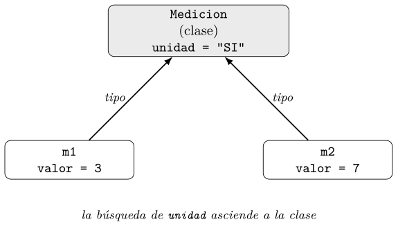
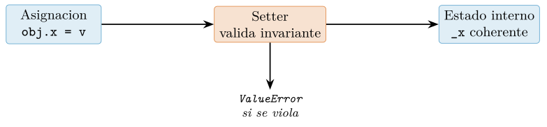
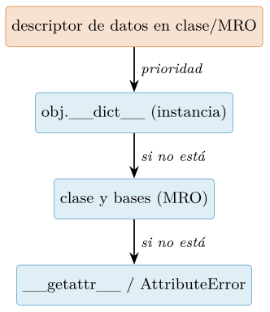
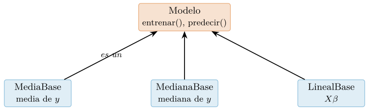
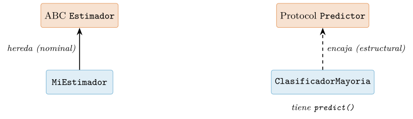
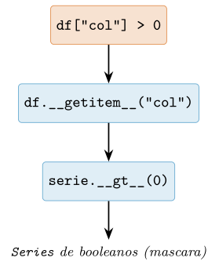
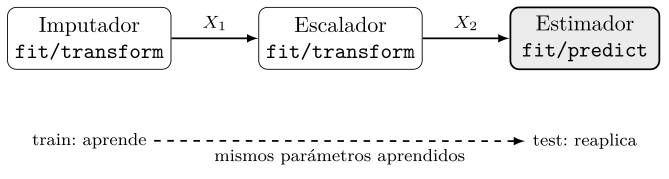
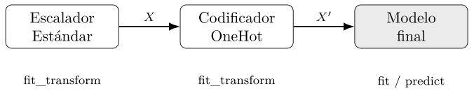

Capítulo 6. Programación orientada a objetos y patrones para datos
▶ Ejecutar este capítulo en Binder
La primera vez que se abre, Binder construye el entorno en la nube (unos 10-20 min); verás una pantalla de progreso. Después queda en caché y abre en segundos. Si parece que no responde, espera a que termine de construirse o vuelve a intentarlo.
La programación orientada a objetos cierra la Parte II. Tiene fama ambivalente en ciencia de datos, y con razón: no hace falta una jerarquía de clases para sumar una columna. Pero entenderla es imprescindible por dos motivos. Primero, porque en Python todo es un objeto, y las bibliotecas que usamos —un DataFrame, un estimador de scikit‑learn— son objetos con métodos y un contrato de diseño; sin este vocabulario no se lee su funcionamiento. Segundo, porque cuando el código propio crece, las clases bien usadas son lo que lo mantiene organizado y correcto. Este capítulo enseña la POO con mesura y orientada a datos: encapsulación, herencia frente a composición, los protocolos que formalizan el duck typing, el modelo de datos que hace que tus objetos se integren con la sintaxis del lenguaje, y los patrones de diseño —transformador, estrategia, pipeline— que estructuran un flujo de análisis. Se apoya en el modelo de objetos del cap. 2 y en las dataclasses del cap. 4, y prepara la lectura del diseño de NumPy (cap. 7), pandas (cap. 8) y scikit‑learn (cap. 14).
Clases e instancias: estado y comportamiento
En Python todo valor es un objeto: un entero, una función, un módulo, un DataFrame de pandas (cap. 8) o un estimador de scikit-learn (cap. 14). Esta uniformidad no es un detalle académico. Cuando escribimos modelo.fit(X, y) o df.groupby("clase").mean() estamos invocando métodos sobre instancias de clases, y la firma, el estado interno y el contrato de esos objetos determinan lo que podemos y no podemos hacer con ellos. Sin el vocabulario de la programación orientada a objetos (POO) no se lee el diseño de las bibliotecas que constituyen el instrumental cotidiano de la ciencia de datos: la razón por la que un Transformer de scikit-learn expone fit, transform y fit_transform, o por la que un estimador guarda sus parámetros aprendidos en atributos con sufijo de subrayado (coef_), es una decisión deliberada de diseño orientado a objetos documentada como interfaz común (Buitinck et al. 2013).
La tesis de este capítulo es que la POO debe emplearse con mesura y orientada a datos. No todo problema de análisis exige una jerarquía de clases; con frecuencia una función pura (cap. 3) o una dataclass como registro (cap. 4) resuelven mejor la tarea, con menos acoplamiento. Pero cuando el código propio crece — cuando un mismo agregado de datos y operaciones aparece una y otra vez, cuando hay estado que debe permanecer coherente entre llamadas, o cuando se quiere ofrecer una API estable a otros — las clases son la herramienta que agrupa datos (atributos) y comportamiento (métodos) en una unidad con un contrato explícito. Este apartado profundiza en ese mecanismo. Damos por conocidos el modelo de objetos, la identidad frente al valor y la mutabilidad (cap. 2); aquí nos ocupamos de cómo el estado y el comportamiento se distribuyen entre la clase y sus instancias, y de los errores clásicos que surgen al confundir ambos niveles.
La clase como plantilla y la instancia como objeto concreto
Una clase es una plantilla que describe qué datos contendrá cada objeto de su tipo y qué operaciones podrán realizarse sobre ellos. Una instancia es un objeto concreto construido a partir de esa plantilla, con sus propios valores. La distinción es la misma que media entre el plano de un edificio y el edificio construido: un plano, muchos edificios; una clase, muchas instancias, cada una con estado independiente pero compartiendo el mismo comportamiento.
Consideremos una clase que modela una serie de observaciones numéricas —una columna de datos con nombre— y ofrece unas pocas operaciones descriptivas. Es un ejemplo deliberadamente cercano a lo que pandas o NumPy (cap. 7) hacen a gran escala, pero reducido a lo esencial para exhibir el mecanismo.
import math
from statistics import mean, pstdev
class Serie:
"""Columna de observaciones numericas con nombre."""
def __init__(self, nombre, datos):
self.nombre = nombre # atributo de instancia
self.datos = list(datos) # copia defensiva: estado propio
def __len__(self):
return len(self.datos)
def media(self):
return mean(self.datos)
def desviacion(self):
return pstdev(self.datos)
def normalizar(self):
mu, sigma = self.media(), self.desviacion()
if sigma == 0:
raise ValueError("desviacion nula: no se puede normalizar")
return Serie(self.nombre, [(x - mu) / sigma for x in self.datos])La construcción s = Serie("altura", [1.6, 1.7, 1.8]) crea una instancia. Cada instancia posee su propio nombre y su propia lista datos; dos series distintas no comparten ese estado. El método normalizar devuelve una nueva Serie en lugar de mutar la existente, siguiendo el estilo de valor discutido en cap. 2: es una decisión de diseño, no una imposición del lenguaje.
Inicialización con __init__ y el papel de self
El método __init__ es el inicializador: se ejecuta automáticamente justo después de que Python haya creado el objeto, y su cometido es dejar la instancia en un estado coherente asignando sus atributos. Conviene ser preciso con la terminología. __init__ no crea el objeto; la creación corre a cargo de __new__, que asigna la memoria y devuelve la instancia, tras lo cual el intérprete llama a __init__ sobre ella (Python Software Foundation, s. f.-b). En la inmensa mayoría de las clases de datos solo se define __init__; __new__ interviene únicamente en casos especiales (subclasear tipos inmutables, metaclases, ciertos singletons) que veremos más adelante solo de pasada.
El primer parámetro de todo método de instancia, self por convención, es la referencia a la instancia sobre la que se invoca el método. No es una palabra reservada: el nombre self es una costumbre firmemente establecida (Rossum et al. 2001) que conviene respetar sin excepción. Cuando escribimos s.media(), Python traduce la llamada a Serie.media(s): busca media en la clase y pasa la instancia s como self. Este mecanismo —la vinculación de un método a su instancia— es lo que Ramalho (2022) describe con detalle al analizar cómo los objetos función se convierten en métodos ligados a través del protocolo de descriptores (cap. 2); volveremos sobre los descriptores en la caja avanzada.
Atributos de instancia frente a atributos de clase
Existen dos lugares donde puede residir un atributo, y confundirlos es una de las fuentes de error más frecuentes entre quienes se inician en la POO. Un atributo de instancia vive en el objeto concreto (técnicamente, en su diccionario __dict__) y es privativo de esa instancia. Un atributo de clase se define en el cuerpo de la clase, fuera de cualquier método, y es único: existe una sola copia compartida por todas las instancias.
class Medicion:
unidad = "SI" # atributo de CLASE: uno para todas
def __init__(self, valor):
self.valor = valor # atributo de INSTANCIA: uno por objetoLa búsqueda de atributos sigue una regla clara: al evaluar obj.attr, Python mira primero en la instancia y, si no lo encuentra, asciende por la clase y sus superclases (Python Software Foundation 2026). Por eso Medicion(3).unidad devuelve "SI": no hay unidad en la instancia, y la búsqueda la encuentra en la clase.
El atributo de clase es idóneo para constantes compartidas, valores por defecto inmutables o contadores gestionados explícitamente. La Figura 6.1 resume dónde reside cada dato y cómo procede la búsqueda.

valor) en su diccionario; el atributo de clase (unidad) es único y se resuelve al ascender por el tipo cuando la instancia no lo define.El error del atributo de clase mutable compartido
El peligro aparece cuando un atributo de clase es mutable —una lista, un diccionario, un conjunto— y se lo trata, por descuido, como si fuera estado propio de cada instancia. Al ser una única copia compartida, cualquier mutación se refleja en todas las instancias a la vez.
class DatasetMalo:
columnas = [] # ATRIBUTO DE CLASE MUTABLE: trampa
def __init__(self, nombre):
self.nombre = nombre
def anadir(self, col):
self.columnas.append(col) # muta la lista COMPARTIDA
a = DatasetMalo("a")
b = DatasetMalo("b")
a.anadir("edad")
print(b.columnas) # ['edad'] <-- b hereda lo que hizo aLa causa es sutil. La sentencia self.columnas.append(col) no crea un atributo de instancia: primero resuelve self.columnas —que, al no existir en la instancia, se encuentra en la clase— y luego muta ese objeto compartido en el sitio. No hay ninguna asignación a self, de modo que la lista de la clase es la que cambia, y b —y toda futura instancia— la ve modificada. La corrección consiste en crear estado propio en el inicializador.
class DatasetBueno:
def __init__(self, nombre, columnas=None):
self.nombre = nombre
self.columnas = list(columnas) if columnas else [] # por instancia
def anadir(self, col):
self.columnas.append(col) # muta SOLO la lista de esta instanciaEste patrón —nunca usar un contenedor mutable como atributo de clase con intención de estado por instancia; inicializarlo siempre dentro de __init__— es el análogo, en el nivel de clase, del célebre error del argumento por defecto mutable en funciones (cap. 3). Ambos comparten raíz: un objeto mutable creado una sola vez y reutilizado donde se esperaba uno nuevo cada vez. Slatkin (2020) y Beazley y Jones (2013) insisten en esta clase de errores por su frecuencia y por lo difíciles que resultan de diagnosticar, pues el síntoma aparece lejos de la causa.
Es importante distinguir la mutación de la reasignación. Si en lugar de self.columnas.append(...) escribiéramos self.columnas = self.columnas + [col], la asignación crearía un atributo de instancia nuevo (que oculta el de la clase) y no habría efecto lateral compartido. La Tabla 6.1 sintetiza el contraste.
| Aspecto | Atributo de instancia | Atributo de clase |
|---|---|---|
| Dónde se define | En __init__ (self.x=…) |
En el cuerpo de la clase |
| Cuántas copias | Una por objeto | Una, compartida |
| Lo ve | Solo su instancia | Todas las instancias |
| Uso típico | Estado (datos, columnas) | Constantes, defaults |
| Riesgo si mutable | Ninguno | Efecto lateral global |
Una clase de datos con comportamiento útil
Reunamos lo anterior en una clase Dataset que agrupa varias columnas y ofrece comportamiento de conjunto. El objetivo no es competir con pandas, sino mostrar cómo estado y comportamiento cohabitan con contrato claro y sin las trampas anteriores. Empleamos un contador de instancias como caso legítimo de atributo de clase (un entero inmutable reasignado, no un contenedor mutado).
class Dataset:
"""Coleccion de columnas Serie del mismo largo."""
_creados = 0 # atributo de clase: contador global legitimo
def __init__(self, columnas):
largos = {len(c) for c in columnas}
if len(largos) > 1:
raise ValueError("columnas de distinto largo")
self._columnas = {c.nombre: c for c in columnas} # estado propio
Dataset._creados += 1 # reasignacion explicita en la clase
def __len__(self):
return len(next(iter(self._columnas.values()))) if self._columnas else 0
def __getitem__(self, nombre):
return self._columnas[nombre] # habilita dataset["edad"]
@property
def nombres(self):
return tuple(self._columnas) # vista de solo lectura
def normalizado(self):
cols = [c.normalizar() for c in self._columnas.values()]
return Dataset(cols)
@classmethod
def instancias_creadas(cls):
return cls._creadosEsta clase ilustra varias piezas del vocabulario que el capítulo desplegará. El método especial __getitem__ integra el objeto en el protocolo de indexación del lenguaje, de modo que dataset["edad"] funciona como en cualquier contenedor nativo: implementar los protocolos adecuados —en lugar de una jerarquía de herencia— es la vía idiomática en Python, el llamado duck typing, que se formaliza mediante clases base abstractas y protocolos (Rossum y Talin 2007; Levkivskyi et al. 2017) y que retomaremos más adelante. La property nombres expone estado derivado como si fuera un atributo, ocultando la representación interna; y el classmethod instancias_creadas recibe la clase (cls), no una instancia, y da acceso controlado al contador compartido. Mantener el estado interno (_columnas) tras nombres con subrayado inicial señala que forma parte de la implementación y no del contrato público, una convención de encapsulación que Martin (2008) y la guía de estilo (Rossum et al. 2001) recomiendan para acotar la superficie expuesta.
Con este vocabulario —clase e instancia, __init__ y self, estado de instancia frente a estado de clase, métodos ordinarios, de clase y propiedades— estamos en condiciones de leer el diseño de las bibliotecas de datos y de estructurar código propio robusto. Los apartados siguientes construyen sobre esta base la encapsulación, la herencia frente a la composición y los patrones de diseño (Gamma et al. 1994; Fowler 2018) que rigen las API de estimadores y transformadores que usaremos en cap. 14.
Encapsulación y propiedades
La encapsulación es uno de los pilares clásicos de la programación orientada a objetos, pero conviene despojarla de la retórica con la que a veces se enseña. Encapsular no consiste en esconder datos por el placer de esconderlos, sino en separar la interfaz de la implementación: exponer un conjunto reducido y estable de operaciones que constituyen el contrato de la clase, y reservarse la libertad de cambiar los detalles internos sin romper a quien la usa. En un flujo de trabajo de ciencia de datos esta distinción es económicamente relevante. Una clase que representa un conjunto de entrenamiento, un normalizador o una ventana deslizante sobre una serie temporal se comparte entre notebooks, pipelines y compañeros de equipo; si su interior queda expuesto sin fronteras, cada refactorización posterior arriesga con romper código ajeno. La encapsulación es, en última instancia, una herramienta de gestión del cambio, tal como argumenta Martin (2008) al defender que una buena abstracción no ofrece los datos, sino la esencia de lo que se puede hacer con ellos.
Python no tiene atributos privados de verdad
Quien llega desde Java o C++ espera modificadores como private o protected que el compilador haga cumplir. Python no los tiene, y esta ausencia es deliberada. El modelo de objetos que estudiamos en el cap. 2 descansa sobre un diccionario de instancia (__dict__) esencialmente abierto: cualquier atributo es accesible desde fuera si se conoce su nombre. En lugar de barreras impuestas por el lenguaje, Python confía en convenciones respaldadas por la comunidad y descritas en (Rossum et al. 2001). La filosofía subyacente se resume en el conocido lema we are all consenting adults here: el lenguaje señala qué es interno, y confía en que el programador respete la señal.
La primera convención es el guion bajo inicial. Un nombre como _buffer o _recalcular() comunica “esto es un detalle de implementación; no forma parte de la interfaz pública y puede cambiar sin previo aviso”. No hay ninguna protección técnica: se puede leer y escribir obj._buffer sin error. La convención es un contrato social, y las herramientas del ecosistema la respetan (por ejemplo, un from modulo import * no arrastra los nombres con guion bajo inicial, y los generadores de documentación los omiten por defecto).
La segunda convención, más agresiva, es el doble guion bajo inicial (sin doble guion bajo final), que activa el name mangling. Cuando dentro del cuerpo de una clase Cuenta se escribe self.__saldo, el compilador reescribe el nombre a _Cuenta__saldo en tiempo de compilación. El objetivo no es la privacidad sino evitar colisiones accidentales de nombres entre una clase y sus subclases: si una subclase define su propio __saldo, no pisará al de la clase base porque cada uno se decora con el nombre de su clase. El siguiente listado hace visible el mecanismo.
class Cuenta:
def __init__(self, saldo):
self._titular = None # interno por convencion (un guion bajo)
self.__saldo = saldo # name mangling -> _Cuenta__saldo
def mostrar(self):
return self.__saldo # dentro de la clase, el nombre corto funciona
c = Cuenta(100)
print(c._titular) # OK: accesible, solo "no deberias"
# print(c.__saldo) # AttributeError: no existe ese nombre
print(c._Cuenta__saldo) # 100 <- el nombre real tras el mangling
print([n for n in vars(c)]) # ['_titular', '_Cuenta__saldo']El doble guion bajo, por tanto, no cifra ni bloquea nada: c._Cuenta__saldo sigue siendo accesible. Ramalho (2022) recomienda usarlo con moderación; en la práctica, la mayoría del código de bibliotecas serias prefiere el guion bajo simple, reservando el doble para los pocos casos en que una jerarquía profunda hace real el riesgo de colisión. Abusar del mangling complica la depuración, la serialización y el acceso legítimo desde tests, sin aportar seguridad efectiva.
De atributo a propiedad: el decorador @property
Supongamos que una clase Pista guarda la popularidad de una canción (un entero de 0 a 100) y ofrece el atributo público popularidad. Los usuarios escriben p.popularidad para leer y p.popularidad = 80 para asignar. Un día descubrimos que necesitamos rechazar valores fuera del rango [0, 100], o exponer también la popularidad normalizada al intervalo [0, 1]. En un lenguaje con campos públicos esto obligaría a introducir métodos getPopularidad()/setPopularidad() y a reescribir cada punto del código que tocaba el atributo. En Python no: el decorador @property permite convertir un atributo en un par de métodos manteniendo intacta la sintaxis de acceso. Este principio se conoce como uniform access y es una de las razones por las que en Python no se escriben getters y setters preventivos “por si acaso”.
class Pista:
def __init__(self, popularidad):
self.popularidad = popularidad # pasa por el setter -> valida
@property
def popularidad(self): # getter
return self._popularidad
@popularidad.setter
def popularidad(self, valor): # setter con validacion
if not 0 <= valor <= 100:
raise ValueError(f"popularidad fuera de [0,100]: {valor}")
self._popularidad = int(valor)
@property
def popularidad_norm(self): # atributo CALCULADO, solo lectura
return self._popularidad / 100
p = Pista(80)
print(p.popularidad, p.popularidad_norm) # 80 0.8
p.popularidad = 55 # invoca el setter, valida y almacena
# p.popularidad = 150 # ValueError
# p.popularidad_norm = 0.5 # AttributeError: no hay setterObsérvense tres puntos. Primero, el estado real vive en _popularidad (guion bajo: interno), mientras que popularidad es la propiedad pública. Segundo, popularidad_norm es un atributo calculado: no se almacena, se deriva bajo demanda, y al carecer de @popularidad_norm.setter es de solo lectura; cualquier intento de asignarlo lanza AttributeError. Tercero, y esencial, __init__ asigna a self.popularidad (la propiedad), no a self._popularidad: así la validación se aplica también en la construcción y no solo en asignaciones posteriores. Esta disciplina es la que garantiza que un objeto nunca exista en un estado inválido.
La lección estratégica es empezar con un atributo público simple y promoverlo a propiedad solo cuando surja la necesidad de validar o calcular. Introducir getters y setters vacíos de antemano, al estilo Java, añade ruido sin beneficio: si mañana hace falta lógica, @property la incorpora sin cambiar la interfaz. Slatkin (2020) formula esta idea como una regla práctica: prefiere atributos públicos sencillos y reserva las propiedades para cuando aporten comportamiento; y advierte además de un antipatrón frecuente, meter efectos secundarios costosos o sorprendentes (E/S, llamadas de red) dentro de un getter, que rompe la expectativa de que leer un atributo es barato y sin consecuencias.
Invariantes de clase
Una invariante es una condición sobre el estado de un objeto que debe cumplirse siempre que el objeto sea observable desde fuera: antes y después de cada método público. Para un intervalo [inicio, fin], la invariante podría ser inicio <= fin; para una proporción, 0 <= p <= 1; para un DataFrame de features y su vector de etiquetas, que ambos tengan el mismo número de filas. Las invariantes son el corazón del contrato de una clase: expresan qué significa que una instancia esté “bien formada”.
La encapsulación es lo que hace sostenibles las invariantes. Si el estado fuera público y mutable sin control, cualquier código podría dejar el objeto en un estado inconsistente. Al canalizar toda escritura a través de __init__ y de setters que validan, se establece un cuello de botella donde la invariante se comprueba. La Figura 6.2 ilustra este flujo.

El ejemplo siguiente reúne las piezas en una clase realista para ciencia de datos: una división entrenamiento/validación que debe respetar varias invariantes simultáneas.
class DivisionDatos:
"""Invariantes:
- 0.0 < proporcion_val < 1.0
- len(X) == len(y)
- X, y no vacios
"""
def __init__(self, X, y, proporcion_val=0.2):
if len(X) != len(y):
raise ValueError(f"X e y difieren: {len(X)} vs {len(y)}")
if len(X) == 0:
raise ValueError("conjunto vacio")
self._X, self._y = X, y
self.proporcion_val = proporcion_val # valida via setter
@property
def proporcion_val(self):
return self._proporcion_val
@proporcion_val.setter
def proporcion_val(self, p):
if not (0.0 < p < 1.0):
raise ValueError(f"proporcion fuera de (0, 1): {p}")
self._proporcion_val = float(p)
@property
def n_validacion(self): # calculado, siempre coherente
return round(len(self._X) * self._proporcion_val)
@property
def n_entrenamiento(self):
return len(self._X) - self.n_validacionLas invariantes que enlazan dos atributos (aquí len(X) == len(y)) se comprueban en __init__, porque involucran varios campos a la vez; las que afectan a un solo atributo mutable (proporcion_val) se protegen en su setter, que se ejecuta también desde el constructor. Nótese que n_validacion y n_entrenamiento son propiedades calculadas: al derivarse del estado en cada lectura, no pueden desincronizarse. Esta es una manifestación del principio DRY (don’t repeat yourself) aplicado al estado: no almacenar lo que se puede calcular evita la clase entera de errores en que dos campos redundantes divergen. Fowler (2018) cataloga precisamente el paso de campo almacenado a valor derivado como una refactorización de encapsulación, y @property la hace trivial en Python.
Por qué property y no getX/setX
La Tabla 6.2 contrasta ambos enfoques. La conclusión de estilo, avalada por (Rossum et al. 2001) y Ramalho (2022), es directa: en Python se exponen atributos, no accesores; y cuando un atributo necesita lógica, se promueve a @property sin alterar la interfaz. Reservar getters y setters explícitos solo tiene sentido cuando la operación es conceptualmente un método (por ejemplo, porque es cara, tiene efectos secundarios o toma parámetros), en cuyo caso nombrarla como verbo (cargar_desde_disco()) es más honesto que disfrazarla de acceso a un campo.
| Aspecto | Atributo / @property |
getX() / setX() |
|---|---|---|
| Sintaxis de lectura | obj.x |
obj.getX() |
| Migrar a lógica | sin cambiar llamadas | rompe si se empezó con campo |
| Solo lectura | omitir el setter | no ofrecer setX |
| Legibilidad | natural, ligera | verbosa, redundante |
| Recomendado en Python | sí, por defecto | solo si es un método real |
Esta filosofía de exponer una interfaz clara y estable en lugar del estado interno prepara el terreno para el diseño de APIs coherentes que veremos en el resto del capítulo, y en particular para la convención fit/transform de scikit-learn (cap. 14), donde los resultados aprendidos se exponen como atributos públicos terminados en guion bajo (coef_, mean_) precisamente para señalar que solo existen tras el ajuste (Buitinck et al. 2013). La encapsulación bien entendida no es una muralla, sino un contrato legible entre quien escribe la clase y quien la usa.
Métodos de clase, estáticos y la resolución de atributos
Hasta ahora, todos los métodos que hemos escrito reciben como primer parámetro la instancia sobre la que operan, por convención llamado self. Este es solo uno de los tres tipos de métodos que Python distingue. Comprender los otros dos —los métodos de clase y los métodos estáticos— y, sobre todo, entender el mecanismo por el cual el intérprete localiza un atributo cuando escribimos obj.x, es lo que separa a quien usa clases de quien las diseña. En ciencia de datos estos conceptos aparecen constantemente: los estimadores de scikit-learn (cap. 14) exponen constructores alternativos, los DataFrame de pandas (cap. 8) ofrecen fábricas como DataFrame.from_records, y la eficiencia en memoria de millones de objetos pequeños depende de mecanismos como __slots__. Esta sección profundiza en el modelo de atributos introducido en el cap. 2, sin reexplicar la identidad ni la mutabilidad ya tratadas allí.
Métodos de clase: constructores alternativos
Un método decorado con @classmethod no recibe la instancia, sino la propia clase, ligada por convención al parámetro cls. La diferencia es sustantiva: mientras self apunta a un objeto concreto, cls apunta al tipo, de modo que el método puede crear instancias, consultar o modificar estado de clase, o comportarse polimórficamente respecto a las subclases. El uso canónico —y el que Ramalho (2022) destaca como la razón principal para emplearlos— es el de constructor alternativo: una fábrica que produce instancias a partir de una representación distinta de la que espera __init__.
Consideremos una clase que representa un conjunto de datos tabular. Su __init__ recibe las columnas ya materializadas, pero rara vez partimos de ahí: lo habitual es leer de un CSV, de un diccionario o de una consulta. En lugar de sobrecargar __init__ con lógica de análisis sintáctico, ofrecemos fábricas explícitas y autodocumentadas.
from __future__ import annotations
import csv
class Dataset:
def __init__(self, columnas: dict[str, list]):
self.columnas = columnas
@classmethod
def from_csv(cls, ruta: str, *, sep: str = ",") -> "Dataset":
with open(ruta, newline="") as f:
lector = csv.reader(f, delimiter=sep)
cabecera = next(lector)
datos: dict[str, list] = {c: [] for c in cabecera}
for fila in lector:
for clave, valor in zip(cabecera, fila):
datos[clave].append(valor)
return cls(datos) # <- cls, no Dataset
@classmethod
def from_dict(cls, d: dict[str, list]) -> "Dataset":
return cls(dict(d))
ds = Dataset.from_csv("ventas.csv")El detalle crítico está en la línea return cls(datos). Si hubiéramos escrito return Dataset(datos), el constructor quedaría ligado al nombre Dataset. Al usar cls, una subclase DatasetEtiquetado(Dataset) que herede from_csv obtendrá, al invocar DatasetEtiquetado.from_csv(...), una instancia de DatasetEtiquetado, porque cls se liga a la clase por la que se accede al método, no a la que lo definió. Esta es la propiedad que hace que los constructores alternativos cooperen con la herencia (Sección 6.4). Beazley y Jones (2013) recomiendan este idioma precisamente por su robustez frente a la especialización.
Métodos estáticos: afinidad sin estado
Un método decorado con @staticmethod no recibe ni self ni cls: es una función ordinaria que reside en el espacio de nombres de la clase por mera afinidad conceptual. No accede al estado de la instancia ni al de la clase; su única razón de existir dentro de la clase es la cohesión semántica y la posibilidad de ser sobrescrito o localizado por la MRO como cualquier otro atributo.
class Dataset:
# ... (como antes)
@staticmethod
def _es_numerica(columna: list[str]) -> bool:
"""Auxiliar sin estado: agrupada por afinidad."""
try:
for v in columna:
float(v)
return True
except ValueError:
return False
def tipos(self) -> dict[str, str]:
return {
nombre: ("num" if Dataset._es_numerica(col) else "str")
for nombre, col in self.columnas.items()
}La pregunta natural es cuándo usar cada uno. La Tabla 6.3 resume el criterio. Como regla de diseño, si el método necesita la clase (por ejemplo para construir instancias o consultar atributos de clase), es @classmethod; si no necesita ni instancia ni clase, es @staticmethod; y si no necesita ninguna de las dos ni una afinidad fuerte con la clase, quizá deba ser una función a nivel de módulo, como aconseja Slatkin (2020).
| Decorador | Recibe | Accede a | Uso típico |
|---|---|---|---|
| (ninguno) | self |
instancia y clase | operar sobre el objeto |
@classmethod |
cls |
clase (y subclases) | constructores alternativos |
@staticmethod |
(nada) | nada implícito | función afín, sin estado |
Cómo resuelve Python un atributo
La expresión obj.x no es una simple lectura de un campo: dispara un algoritmo de búsqueda bien definido, descrito en el modelo de datos del lenguaje (Python Software Foundation, s. f.-b, 2026). Para una lectura ordinaria de atributo sobre una instancia, el intérprete procede, de forma simplificada, así:
Consulta el diccionario de la clase (recorriendo la MRO) en busca de
x. Si lo halla y es un descriptor de datos (define__set__o__delete__), su__get__tiene prioridad y decide el resultado.En otro caso, consulta el diccionario de la instancia,
obj.__dict__. Sixestá allí, devuelve ese valor.Si no, vuelve al valor hallado en la clase: si es un descriptor de no-datos (solo
__get__, como una función o un@staticmethod) invoca su__get__; si es un valor corriente, lo devuelve.Si nada aparece, se invoca
__getattr__(si existe) y, en su defecto, se elevaAttributeError.
El recorrido «instancia, luego clase y sus bases» es la intuición esencial; la precedencia de los descriptores de datos es el matiz que explica por qué una property no puede ser eclipsada por una entrada en el __dict__ de la instancia. El orden concreto en que se visitan las clases base —la Method Resolution Order o MRO— se detalla en Sección 6.4. La Figura 6.3 esquematiza el flujo.

obj.x. Los descriptores de datos declarados en la clase o su MRO tienen prioridad sobre el __dict__ de la instancia; el resto de valores de clase solo se consultan si la instancia no define el atributo.__slots__: fijar los atributos y ahorrar memoria
Por omisión, cada instancia lleva su propio __dict__, un diccionario que permite añadir atributos arbitrarios en tiempo de ejecución. Esa flexibilidad tiene un coste: memoria por objeto y una indirección adicional. Cuando creamos millones de instancias pequeñas —un escenario típico al modelar filas, nodos de un grafo o partículas de una simulación— declarar __slots__ (visto ya en cap. 2 y cap. 4) reemplaza el diccionario por descriptores de ranura, uno por atributo declarado.
class Punto:
__slots__ = ("x", "y") # fija el conjunto de atributos
def __init__(self, x: float, y: float):
self.x = x
self.y = y
p = Punto(1.0, 2.0)
p.x = 3.0 # OK: 'x' esta en __slots__
p.z = 5.0 # AttributeError: sin __dict__Tres consecuencias, todas en línea con (Beazley y Jones 2013): (i) Punto fija su conjunto de atributos, y previene errores tipográficos que crearían atributos espurios silenciosamente; (ii) reduce el consumo de memoria de forma apreciable —a menudo entre un 40% y un 50% en objetos con pocos campos—, pues elimina el __dict__; (iii) prohíbe añadir atributos no declarados. Los __slots__ son, precisamente, un conjunto de descriptores de datos generados por el intérprete, y explican su interacción con el algoritmo de resolución anterior. Conviene advertir que introducen fricciones —herencia múltiple con varias clases que definen ranuras, pérdida de asignación dinámica, incompatibilidades con algunas técnicas de serialización— por lo que son una optimización deliberada, no un valor por defecto. Las dataclass admiten slots=True (cap. 4) para obtener este efecto sin escribir la tupla a mano.
Herencia, composición y clases base abstractas
Hasta aquí hemos construido clases aisladas. El paso siguiente es organizar familias de clases relacionadas. Dos mecanismos rivalizan para ello: la herencia, que expresa una relación “es un” (is-a), y la composición, que expresa una relación “tiene un” (has-a). Ambos permiten reutilizar comportamiento, pero con propiedades de acoplamiento muy distintas. Esta sección diseca los dos, introduce el orden de resolución de métodos (MRO) y la linealización C3, presenta los mixins y las clases base abstractas (abc), y formula la regla de diseño que atraviesa todo el capítulo: preferir la composición a la herencia. El hilo conductor será un objeto Modelo con la interfaz entrenar/predecir, deliberadamente cercano al estimador de scikit-learn que estudiaremos en el cap. 14.
Herencia: especialización y super()
Una subclase especializa a su clase base: hereda todos sus atributos y métodos, añade los suyos y redefine (sobrescribe) aquellos cuyo comportamiento debe cambiar. La relación es de sustituibilidad: allí donde el código espera un objeto de la base, debería poder recibir un objeto de la subclase sin romperse (principio de sustitución de Liskov, uno de los pilares del diseño orientado a objetos que discute Martin (2008)).
Consideremos una jerarquía de modelos predictivos. La base define el contrato y una implementación de predecir compartida; cada subclase decide cómo entrenar.
import numpy as np
class Modelo:
"""Base: define el flujo comun entrenar -> predecir."""
def __init__(self, nombre="modelo"):
self.nombre = nombre
self._entrenado = False
def entrenar(self, X, y):
raise NotImplementedError("subclase debe implementar entrenar")
def predecir(self, X):
if not self._entrenado:
raise RuntimeError(f"{self.nombre}: llame a entrenar() antes")
return self._predecir(X)
def _predecir(self, X):
raise NotImplementedError
def __repr__(self):
estado = "entrenado" if self._entrenado else "sin entrenar"
return f"{type(self).__name__}(nombre={self.nombre!r}, {estado})"
class MediaBase(Modelo):
"""Predice siempre la media de y (baseline de regresion)."""
def entrenar(self, X, y):
self._media = float(np.mean(y))
self._entrenado = True
return self
def _predecir(self, X):
return np.full(len(X), self._media)Nótese cómo predecir vive en la base y es común a todas las subclases: implementa la guarda de estado y delega el cálculo real en _predecir. Este patrón — un método público estable que orquesta pasos redefinibles — es el método plantilla (template method) de Gamma et al. (1994), y es exactamente el que emplea internamente scikit-learn con su separación entre fit y los métodos protegidos.
La función incorporada super() devuelve un objeto delegado que invoca la implementación de la siguiente clase en el orden de resolución (no necesariamente la superclase literal, como veremos). Su uso canónico es extender, no reemplazar, el comportamiento heredado.
class MedianaBase(Modelo):
"""Baseline robusto: predice la mediana de y."""
def __init__(self, nombre="mediana"):
super().__init__(nombre) # inicializa self.nombre, self._entrenado
self._q = 0.5
def entrenar(self, X, y):
self._mediana = float(np.median(y))
self._entrenado = True
return self
def _predecir(self, X):
return np.full(len(X), self._mediana)Llamar a super().__init__(nombre) evita duplicar la lógica de inicialización de la base y, más importante, mantiene la cadena de inicialización intacta cuando haya herencia múltiple. Recomendar super() sin argumentos (forma de Python 3) frente a la forma explícita Modelo.__init__(self, nombre) no es cosmético: solo la primera respeta el MRO dinámico y hace cooperativa la herencia (Slatkin 2020).

Modelo. Jerarquía de especialización: cada baseline es un Modelo y redefine entrenar/_predecir, heredando de la base el flujo público predecir y la representación __repr__.El orden de resolución de métodos (MRO) y la linealización C3
Cuando se accede a un atributo o método de una instancia, Python lo busca recorriendo una secuencia lineal de clases: el Method Resolution Order. Con herencia simple el MRO es obvio (la instancia, su clase, la base, …, hasta object). Con herencia múltiple la ambigüedad es real, y Python la resuelve con el algoritmo de linealización C3, accesible mediante ClaseNombre.__mro__ o ClaseNombre.mro().
C3 produce un orden que satisface tres garantías simultáneas: respeta el orden de precedencia local (el orden en que se escriben las bases), respeta que toda clase aparezca antes que sus ancestros (monotonicidad), y es consistente en toda la jerarquía. Cuando no existe ningún orden que cumpla las tres, Python rechaza la definición de la clase con un TypeError en tiempo de definición: es un error de diseño, no de ejecución.
El caso patológico es el problema del diamante: dos bases que comparten una superbase común.
class A:
def saludo(self): return "A"
class B(A):
def saludo(self): return "B->" + super().saludo()
class C(A):
def saludo(self): return "C->" + super().saludo()
class D(B, C):
def saludo(self): return "D->" + super().saludo()
print([k.__name__ for k in D.__mro__])
# ['D', 'B', 'C', 'A', 'object']
print(D().saludo()) # 'D->B->C->A'La clave está en la última línea: A se ejecuta una sola vez, y el super() dentro de B.saludo no salta a A sino a C, porque C le sigue en el MRO de D. Esto es la herencia cooperativa: super() no significa “mi clase padre” sino “la siguiente clase en el MRO del objeto real”. Depender de esta cooperación exige que todos los métodos de la cadena llamen a super() y compartan una firma compatible; de lo contrario la cadena se rompe silenciosamente. Por eso, como veremos, el diseño profesional restringe la herencia múltiple a los mixins.
Preferir la composición a la herencia
La herencia es la forma más fuerte de acoplamiento entre dos clases: la subclase depende de detalles internos de la base y cualquier cambio en esta puede romperla (fragile base class problem). Además, la jerarquía es estática — se fija en el momento de la definición — y unidimensional: una clase solo puede especializar una taxonomía a la vez. Por eso la máxima clásica de Gamma et al. (1994), “favorecer la composición de objetos sobre la herencia de clases”, sigue siendo la guía dominante en 2026, y Fowler (2018) cataloga Replace Inheritance with Delegation como una refactorización de primera línea.
Componer significa que un objeto tiene otros objetos como colaboradores y les delega trabajo, en lugar de ser un subtipo. Reescribamos la lógica de baseline por composición: un Predictor genérico que recibe una estrategia de agregación.
from typing import Callable
import numpy as np
class Predictor:
"""Compone una estrategia de agregacion: 'tiene un' agregador."""
def __init__(self, agregador: Callable[[np.ndarray], float],
nombre="predictor"):
self._agregador = agregador # colaborador inyectado
self.nombre = nombre
self._valor = None
def entrenar(self, X, y):
self._valor = float(self._agregador(np.asarray(y)))
return self
def predecir(self, X):
if self._valor is None:
raise RuntimeError(f"{self.nombre}: sin entrenar")
return np.full(len(X), self._valor)
# El comportamiento se elige en tiempo de ejecucion, no de definicion:
p_media = Predictor(np.mean, "media")
p_mediana = Predictor(np.median, "mediana")
p_trim = Predictor(lambda a: np.mean(np.sort(a)[1:-1]), "recortada")Con tres líneas obtenemos lo que la jerarquía de herencia lograba con tres clases, y además una variante nueva (“media recortada”) sin tocar el código existente. La estrategia es intercambiable en tiempo de ejecución (patrón Strategy de Gamma et al. (1994)), el acoplamiento es mínimo — Predictor solo conoce la firma del agregador — y la lógica es trivialmente testeable inyectando dobles de prueba. Esta inyección de dependencias es, precisamente, la filosofía de diseño de la API de scikit-learn descrita por Buitinck et al. (2013): los estimadores se parametrizan con otros estimadores (pipelines, meta-estimadores) en vez de heredar de ellos.
| Criterio | Herencia (es un) | Composición (tiene un) |
|---|---|---|
| Relación | subtipo | colaboración/delegación |
| Acoplamiento | fuerte (a internos) | débil (a una interfaz) |
| Momento | definición (estático) | ejecución (dinámico) |
| Flexibilidad | una taxonomía | múltiples colaboradores |
| Riesgo típico | base frágil, diamante | más objetos que cablear |
| Uso idóneo | contrato/interfaz común | variar comportamiento |
La regla no es “nunca heredar”. Se hereda con provecho para expresar una interfaz común (una clase base abstracta, siguiente apartado) o cuando la relación es un es genuina y estable. Se compone para variar comportamiento. La Tabla 6.4 resume el contraste.
Mixins: herencia acotada de comportamiento
Un mixin es una clase pequeña, sin estado propio ni jerarquía autónoma, pensada para “mezclarse” en otras mediante herencia múltiple y aportar un fragmento de comportamiento ortogonal. No se instancia por sí sola; solo tiene sentido combinada. Los mixins son el uso disciplinado y seguro de la herencia múltiple, porque cada uno cubre un aspecto independiente y la cooperación vía super() queda controlada.
class RegistroMixin:
"""Aporta trazas; no aporta estado ni sabe de Modelo."""
def entrenar(self, X, y):
print(f"[log] entrenando {type(self).__name__} con {len(X)} filas")
resultado = super().entrenar(X, y) # coopera con la cadena MRO
print("[log] entrenamiento completo")
return resultado
class PersistenciaMixin:
def guardar(self, ruta):
import pickle, pathlib
pathlib.Path(ruta).write_bytes(pickle.dumps(self))
return ruta
class MediaRegistrada(RegistroMixin, PersistenciaMixin, MediaBase):
pass
# MRO: MediaRegistrada -> RegistroMixin -> PersistenciaMixin
# -> MediaBase -> Modelo -> objectEl orden importa: los mixins se declaran antes que la clase concreta, de modo que en el MRO precedan a MediaBase y puedan interceptar entrenar antes de delegar en la implementación real con super(). Este es el idioma que scikit-learn usa con ClassifierMixin, RegressorMixin y TransformerMixin (cap. 14): la base BaseEstimator aporta la maquinaria de parámetros y cada mixin añade, por ejemplo, un método score coherente con el tipo de tarea. Slatkin (2020) recomienda reservar la herencia múltiple exclusivamente para mixins sin estado, precisamente para no incurrir en las patologías del diamante del apartado anterior.
Clases base abstractas: definir una interfaz obligatoria
A veces no queremos compartir implementación sino imponer un contrato: garantizar que toda subclase provea ciertos métodos. Para ello Python ofrece las clases base abstractas (ABC) del módulo abc, formalizadas en la PEP 3119 (Rossum y Talin 2007). Una ABC no puede instanciarse mientras tenga métodos abstractos sin implementar; el intento falla en el constructor, no más tarde. Esto convierte un error semántico (“olvidé implementar entrenar”) en un error temprano y localizado.
from abc import ABC, abstractmethod
import numpy as np
class EstimadorBase(ABC):
"""Contrato minimo que todo estimador debe cumplir."""
@abstractmethod
def entrenar(self, X, y) -> "EstimadorBase":
...
@abstractmethod
def predecir(self, X) -> np.ndarray:
...
# Metodo concreto derivado del contrato abstracto:
def entrenar_y_predecir(self, X, y):
return self.entrenar(X, y).predecir(X)
class MediaEstimador(EstimadorBase):
def entrenar(self, X, y):
self._m = float(np.mean(y)); return self
def predecir(self, X):
return np.full(len(X), self._m)
# EstimadorBase() -> TypeError: Can't instantiate abstract class
# MediaEstimador() -> ok: implementa ambos metodos abstractosUna ABC puede mezclar métodos abstractos (el contrato) y métodos concretos que se apoyan en ellos (como entrenar_y_predecir): fija lo que las subclases deben proveer y ofrece lo que puede derivarse de ello. El decorador @abstractmethod puede combinarse con @property, @classmethod o @staticmethod — aplicándolo siempre como el decorador más interno — para exigir también atributos o constructores alternativos. La documentación de referencia del módulo es (Python Software Foundation, s. f.-a).
Las ABC ofrecen además una capacidad singular: el subtipado virtual. Mediante EstimadorBase.register(OtraClase) o sobrescribiendo __subclasshook__, una clase puede reconocerse como subtipo de la ABC sin heredar de ella, con tal de que presente la interfaz esperada. Así funcionan las ABC de collections.abc (Iterable, Sequence, Mapping): cualquier objeto con los métodos adecuados pasa un isinstance(x, Iterable) aunque no descienda de esa clase. Esto reconcilia el tipado nominal de las ABC con el tipado estructural (duck typing) tradicional de Python.
En síntesis operativa: hereda de una ABC para declarar y hacer cumplir un contrato; compón con colaboradores inyectados para variar el comportamiento; reserva la herencia múltiple para mixins sin estado; y, ante la duda, prefiere “tiene un” a “es un”. Estas cuatro decisiones estructuran las bibliotecas de datos que usaremos en los capítulos siguientes, desde los arrays de NumPy (cap. 7) y las estructuras de pandas (cap. 8) hasta los estimadores de scikit-learn (cap. 14).
Duck typing y protocolos: subtipado estructural
En esta sección abandonamos, al menos en parte, la pregunta ¿de qué clase es este objeto? y la sustituimos por otra mucho más productiva en el diseño de bibliotecas de datos: ¿qué sabe hacer este objeto?. Este desplazamiento –de la identidad de tipo a la capacidad– es la esencia del duck typing, un principio que Python lleva en su ADN desde el modelo de objetos que estudiamos en el cap. 2, y que la anotación estática moderna ha formalizado sin traicionar. Comprenderlo bien es lo que separa a quien usa scikit-learn de quien es capaz de extenderlo con componentes propios que encajan de forma nativa en sus Pipeline y validadores.
El principio del pato
La formulación clásica reza: si camina como un pato y grazna como un pato, entonces, a todos los efectos prácticos, es un pato. Trasladado a Python: si un objeto ofrece los métodos y atributos que una función necesita, esa función lo aceptará, con independencia de su clase, de su árbol de herencia o de si el autor de la función y el autor del objeto se conocieron alguna vez. No hay contrato declarado; hay uso efectivo. Ramalho (2022) lo describe como la piedra angular del estilo idiomático de Python: el intérprete nunca comprueba de antemano que un objeto sea de un tipo, sino que, en el momento de la llamada, intenta la operación y solo falla si el método no existe.
Consideremos una función de evaluación que no impone ninguna restricción de tipo sobre su argumento:
def evaluar(modelo, X, y):
"""Evalua cualquier objeto que exponga predict()."""
y_pred = modelo.predict(X)
aciertos = sum(a == b for a, b in zip(y_pred, y))
return aciertos / len(y)La función evaluar funciona con un LogisticRegression de scikit-learn, con un Pipeline, con un GridSearchCV ya ajustado y con este humilde clasificador de una sola línea, que no hereda de nada y no conoce a scikit-learn:
class ClasificadorMayoria:
"""Predice siempre la clase mas frecuente del entrenamiento."""
def fit(self, X, y):
from collections import Counter
self.clase_, _ = Counter(y).most_common(1)[0]
return self
def predict(self, X):
return [self.clase_] * len(X)Nada obliga a ClasificadorMayoria a declarar parentesco con estimador alguno; le basta con caminar y graznar como uno. Esta es, exactamente, la razón por la que scikit-learn es tan componible. Su arquitectura, descrita por sus autores en Buitinck et al. (2013), se apoya en un puñado de interfaces por convención –no por jerarquía– que todo objeto de la biblioteca respeta: los estimadores implementan fit; los predictores, además, predict; los transformadores, transform (y a menudo fit_transform). Un Pipeline no pregunta la clase de sus pasos: encadena llamadas a fit y transform y confía en que estén ahí. El resultado es un ecosistema donde componentes de terceros –y los suyos propios– se enchufan sin fricción, siempre que respeten la interfaz esperada. Profundizaremos en esta API y sus mixins en el cap. 14.
De la convención al contrato: typing.Protocol
El duck typing es potente pero tácito: el contrato vive en la documentación y en la cabeza del programador, no en el código. Durante años, la única forma de declarar una interfaz en Python fue la clase base abstracta (ABC, cap. 2 y (Rossum y Talin 2007; Python Software Foundation, s. f.-a)), que exige herencia explícita: para ser tratado como un Estimador habría que escribir class MiClase(Estimador). Esto reintroduce justamente el acoplamiento por jerarquía que el duck typing evitaba, y no sirve para tipar código ajeno que no podemos modificar.
El sistema de anotaciones de tipos de Python, cuyo marco general fija (Rossum et al. 2014), se basa por defecto en subtipado nominal: B es subtipo de A si B hereda de A. La PEP 544 (Levkivskyi et al. 2017) introdujo la pieza que faltaba: los protocolos, que habilitan el subtipado estructural (structural subtyping). Un protocolo describe una forma –un conjunto de métodos y atributos con sus firmas– y cualquier clase que tenga esa forma es considerada su subtipo por el verificador (mypy, pyright), sin heredar de él ni declararlo en ningún sitio. Es, literalmente, duck typing formalizado para el análisis estático: el pato lo certifica ahora una herramienta, no solo la ejecución.
from typing import Protocol, runtime_checkable
import numpy as np
class Predictor(Protocol):
"""Cualquier objeto capaz de predecir a partir de X."""
def predict(self, X: np.ndarray) -> np.ndarray: ...
def evaluar(modelo: Predictor, X: np.ndarray, y: np.ndarray) -> float:
y_pred = modelo.predict(X)
return float(np.mean(y_pred == y))Ahora la firma de evaluar documenta y verifica su expectativa: recibe algo que predice. Si en otro punto del programa alguien escribe evaluar(scaler, X, y) pasando un StandardScaler (que tiene transform, no predict), mypy lo señala como error antes de ejecutar. Y todo ello sin que LogisticRegression, ClasificadorMayoria ni ninguna clase futura tengan que heredar de Predictor: basta con que expongan un predict de firma compatible. El contrato es explícito para las herramientas y, a la vez, no invasivo para las implementaciones.
Los protocolos admiten atributos, propiedades y varios métodos, y componen bien mediante herencia entre protocolos (que sigue siendo puramente estructural). Podemos, por ejemplo, describir la doble capacidad de un transformador:
from typing import Protocol
import numpy as np
class Transformador(Protocol):
def fit(self, X: np.ndarray, y=None) -> "Transformador": ...
def transform(self, X: np.ndarray) -> np.ndarray: ...
class TransformadorAjustable(Transformador, Protocol):
# Hereda fit/transform y anade uno mas; sigue siendo estructural.
def fit_transform(self, X: np.ndarray, y=None) -> np.ndarray: ...Comprobaciones en tiempo de ejecución: @runtime_checkable
Por defecto, un protocolo solo existe para el verificador estático: isinstance(obj, Predictor) lanza TypeError. Si necesitamos consultarlo en tiempo de ejecución –por ejemplo, para despachar según la capacidad del objeto– debemos decorar el protocolo con @runtime_checkable:
from typing import Protocol, runtime_checkable
@runtime_checkable
class SoportaPredict(Protocol):
def predict(self, X) -> object: ...
def puede_predecir(obj: object) -> bool:
return isinstance(obj, SoportaPredict)
print(puede_predecir(ClasificadorMayoria())) # True
print(puede_predecir(42)) # FalseConviene conocer la letra pequeña, subrayada tanto en (Levkivskyi et al. 2017) como por Ramalho (2022): la comprobación en tiempo de ejecución de un protocolo @runtime_checkable verifica únicamente la presencia de los miembros por su nombre, no sus firmas ni sus tipos de retorno. isinstance(obj, SoportaPredict) devuelve True si obj tiene un atributo llamado predict, aunque acepte otros argumentos o devuelva algo absurdo. La verificación estructural completa (firmas incluidas) sigue siendo tarea del verificador estático. Por ello, @runtime_checkable es útil para despacho rápido y aserciones defensivas, pero no sustituye a mypy ni garantiza correcciones de firma.
Protocolo o ABC: cuándo cada uno
Protocolos y clases base abstractas no compiten: resuelven problemas distintos, y un diseñador maduro elige con criterio. La regla operativa es la siguiente. Use una ABC cuando quiera imponer una jerarquía explícita y, sobre todo, cuando desee compartir comportamiento: una ABC puede aportar métodos concretos ya implementados que las subclases heredan (los mixins de scikit-learn, como TransformerMixin, que regala fit_transform a quien implemente fit y transform, son el ejemplo canónico; cap. 14). Use un Protocolo cuando solo le interese la compatibilidad estructural sin acoplar al proveedor: para tipar funciones que aceptan objetos de terceros, para describir interfaces que no controla, o para evitar que sus usuarios tengan que heredar de nada suyo. En términos de Martin (2008) y del principio de inversión de dependencias, el protocolo permite depender de una abstracción sin acoplarse a su implementación ni a su árbol de tipos.
| Criterio | ABC (abc.ABC) |
Protocol (PEP 544) |
|---|---|---|
| Relación de subtipo | Nominal (herencia explícita) | Estructural (por forma) |
| Requiere heredar | Sí | No |
| Comparte código | Sí (métodos concretos) | No (solo firmas) |
| Tipar código ajeno | Difícil o imposible | Natural |
| Verificación estática | Sí | Sí (mypy, pyright) |
isinstance |
Siempre | Solo con @runtime_checkable |
| Acoplamiento | Alto | Bajo |
| Uso idiomático | Familia con base común | Interfaz mínima requerida |
La Figura 6.5 contrasta ambos mecanismos de subtipado. En el nominal, la flecha de subtipo la dibuja el programador al declarar la herencia; en el estructural, la deduce el verificador a partir de los miembros presentes.

Merece la pena señalar que ambos mundos no están del todo separados. Las ABC de Python admiten registro virtual mediante Estimador.register(MiClase) o el gancho __subclasshook__, que permite que isinstance devuelva True sin herencia real (Rossum y Talin 2007; Python Software Foundation, s. f.-a). Es una forma antigua y más artesanal de aproximar el comportamiento estructural; los protocolos de la PEP 544 la industrializan y la integran con el verificador de tipos, por lo que en código nuevo son casi siempre la opción preferible cuando lo que se busca es describir una capacidad, no fundar una familia.
from abc import ABC, abstractmethod
import numpy as np
class EstimadorBase(ABC):
"""ABC con comportamiento compartido: solo falta predict()."""
@abstractmethod
def predict(self, X: np.ndarray) -> np.ndarray: ...
def score(self, X: np.ndarray, y: np.ndarray) -> float:
# Metodo concreto heredado por todas las subclases.
return float(np.mean(self.predict(X) == y))
class MediaMovil(EstimadorBase):
def fit(self, X, y):
self.media_ = float(np.mean(y)); return self
def predict(self, X):
return np.full(len(X), self.media_)En el listado anterior, score es comportamiento regalado por la ABC: exactamente lo que un protocolo no puede ofrecer, porque un protocolo no aporta implementación. Si su intención es distribuir esa lógica común, la ABC es la herramienta correcta; si solo quiere que una función acepte cualquier cosa con predict, el protocolo es más limpio y menos intrusivo. La elección, en definitiva, no es entre lo moderno y lo antiguo, sino entre compartir comportamiento y describir una capacidad. El repertorio de patrones que veremos a continuación –y su aplicación al diseño de estimadores en el cap. 14– se apoya de forma constante en esta distinción (Gamma et al. 1994; Buitinck et al. 2013).
Métodos especiales y el modelo de datos
El cap. 2 introdujo la idea de que ciertos métodos con nombres rodeados por dobles guiones bajos—llamados coloquialmente dunder, de double underscore—permiten que un objeto responda a operaciones sintácticas del lenguaje. Aquí ofrecemos el tratamiento definitivo. La tesis central, que Ramalho (2022) eleva a principio organizador de todo Python, es la siguiente: el intérprete casi nunca invoca directamente los métodos especiales; en su lugar, la sintaxis del lenguaje se traduce en llamadas a dunder. Cuando escribes len(v), el intérprete busca v.__len__(); cuando escribes a + b, busca a.__add__(b); cuando escribes obj[i], busca obj.__getitem__(i). Este conjunto de convenciones—qué dunder invoca cada construcción sintáctica y con qué reglas de resolución—constituye el modelo de datos de Python, documentado exhaustivamente en la referencia oficial (Python Software Foundation, s. f.-b). Implementar dunder es, por tanto, la vía por la que tus clases se integran de forma nativa con for, in, la indexación, los operadores aritméticos y de comparación, la llamada de función y el bloque with. Comprender este mecanismo no es un lujo estilístico: es la clave para entender por qué NumPy (cap. 7) y pandas (cap. 8) logran una sintaxis tan expresiva como a + b sobre arrays o df["col"] > 0 sobre columnas.
Representación: __repr__ frente a __str__
El primer par de dunder que toda clase seria debería definir gobierna cómo se convierte un objeto en texto. Existen dos funciones y dos métodos, con propósitos distintos que conviene no confundir. La función repr(x) invoca x.__repr__() y busca producir una representación inequívoca, idealmente una cadena que, evaluada, reconstruya el objeto; es la que ve el desarrollador en la consola interactiva, en el depurador y dentro de los contenedores. La función str(x) invoca x.__str__() y busca una representación legible para el usuario final; es la que emplea print y el formateo de cadenas.
La regla práctica es contundente: define siempre __repr__. Si no defines __str__, Python usa __repr__ como sustituto, de modo que un buen __repr__ cubre ambos casos razonablemente. La omisión inversa no funciona: definir solo __str__ deja intacto el __repr__ por defecto, ese poco útil <Vector object at 0x7f...> que oculta el estado del objeto y complica la depuración. Slatkin (2020) insiste en este punto como una de las prácticas de mayor rendimiento por unidad de esfuerzo.
class Vector:
def __init__(self, x, y):
self.x = float(x)
self.y = float(y)
def __repr__(self):
# Inequivoco: se parece a como se construye el objeto.
return f"Vector({self.x!r}, {self.y!r})"
def __str__(self):
# Legible: pensado para el usuario final.
return f"({self.x:g}, {self.y:g})"
v = Vector(3, 4)
v # Vector(3.0, 4.0) -> __repr__
print(v) # (3, 4) -> __str__
print([v, v]) # [Vector(3.0, 4.0), Vector(3.0, 4.0)] ojo: reprNótese el especificador !r dentro del f-string: fuerza el uso de repr sobre cada componente, garantizando que las cadenas aparezcan entrecomilladas y que la representación sea reconstruible. La última línea ilustra un detalle esencial: al mostrar una lista, Python invoca __repr__ de cada elemento, no __str__. Por eso un __repr__ descuidado contamina la legibilidad de toda estructura que contenga tus objetos.
Igualdad y hashing: el contrato __eq__/__hash__
El cap. 2 distinguió identidad (is, la dirección en memoria) de igualdad de valor (==), y el cap. 4 mostró cómo las dataclasses generan __eq__ automáticamente. Recapitulamos aquí el contrato completo, porque es una fuente inagotable de errores sutiles. El operador == invoca __eq__; la función hash()—que las claves de diccionario y los elementos de conjunto necesitan—invoca __hash__. El contrato del modelo de datos (Python Software Foundation, s. f.-b) exige que objetos iguales tengan el mismo hash: si a == b, entonces hash(a) == hash(b). La implicación inversa no se exige (dos objetos distintos pueden colisionar en su hash), pero la directa es inviolable.
De aquí se derivan dos reglas prácticas. Primera: si defines __eq__ sin definir __hash__, Python fija __hash__ = None y tu objeto se vuelve no hashable—no podrá ser clave de diccionario ni elemento de conjunto—. Esto es deliberado: un objeto con igualdad personalizada pero hash heredado por identidad rompería el contrato. Segunda: solo los objetos inmutables deberían ser hashables, porque si el estado que determina la igualdad cambia tras insertar el objeto en un conjunto, su cubeta hash deja de corresponder y el objeto se vuelve irrecuperable.
class Punto:
__slots__ = ("_x", "_y") # sin __dict__: bloquea atributos nuevos + ahorro de memoria
def __init__(self, x, y):
object.__setattr__(self, "_x", x)
object.__setattr__(self, "_y", y)
@property
def x(self): return self._x
@property
def y(self): return self._y
def __eq__(self, other):
if not isinstance(other, Punto):
return NotImplemented # deja que el otro operando intente
return (self.x, self.y) == (other.x, other.y)
def __hash__(self):
return hash((self.x, self.y)) # deriva del mismo estado que __eq__Dos detalles merecen atención. Devolver NotImplemented (no confundir con la excepción NotImplementedError) cuando el otro operando es de tipo desconocido es la forma correcta de cooperar: Python entonces prueba el método reflejado del otro objeto y, si tampoco existe, decide que los objetos no son iguales. Y el hash se calcula a partir de la misma tupla de atributos que gobierna la igualdad, garantizando la coherencia del contrato. Con @dataclass(frozen=True) (cap. 4, (Smith 2017)) todo esto se genera solo, incluida la verdadera prohibición de reasignar atributos; escribirlo a mano una vez, sin embargo, fija el mecanismo subyacente.
Objetos que se comportan como colecciones
El modelo de datos define un pequeño puñado de dunder que, al implementarlos, convierten cualquier objeto en una colección de primera clase, indistinguible sintácticamente de una lista o un diccionario. Los principales son __len__ (habilita len(obj)), __getitem__ (habilita obj[i], incluido el slicing), __iter__ (habilita for x in obj) y __contains__ (habilita x in obj). La Tabla 6.6 resume el mapa sintaxis-dunder que conviene tener presente.
| Sintaxis | Método especial | Semántica |
|---|---|---|
repr(x), consola |
__repr__ |
representación inequívoca |
str(x), print |
__str__ |
representación legible |
x == y |
__eq__ |
igualdad de valor |
hash(x) |
__hash__ |
clave de dict/set |
len(x) |
__len__ |
tamaño |
x[i], x[a:b] |
__getitem__ |
indexación y slicing |
for e in x |
__iter__ |
iteración |
e in x |
__contains__ |
pertenencia |
x + y |
__add__ |
suma |
x * k |
__mul__ |
producto |
x < y |
__lt__ |
orden |
x(...) |
__call__ |
objeto invocable |
with x: |
__enter__/__exit__ |
gestor de contexto |
Un detalle notable del diseño de Python es que __getitem__ tiene un doble papel: no solo habilita la indexación, sino que sirve como mecanismo de iteración de reserva. Si una clase define __getitem__ pero no __iter__, el bucle for la itera llamando obj[0], obj[1], obj[2]… hasta recibir IndexError. Esta es la iteración secuencial clásica, heredada de versiones antiguas del lenguaje. Aun así, para colecciones no triviales conviene definir __iter__ de forma explícita, porque es más eficiente y más expresivo.
import reprlib
class Serie:
"""Coleccion inmutable de valores numericos etiquetados."""
def __init__(self, valores):
self._datos = list(valores)
def __len__(self):
return len(self._datos)
def __getitem__(self, indice):
# Si es un slice, devolvemos otra Serie (no una lista pelada).
if isinstance(indice, slice):
return Serie(self._datos[indice])
return self._datos[indice]
def __iter__(self):
return iter(self._datos)
def __contains__(self, valor):
return valor in self._datos
def __repr__(self):
cuerpo = reprlib.repr(self._datos) # trunca colecciones largas
return f"Serie({cuerpo})"
s = Serie([10, 20, 30, 40])
len(s) # 4 -> __len__
s[1] # 20 -> __getitem__(1)
s[1:3] # Serie([20, 30]) -> __getitem__(slice(1, 3))
20 in s # True -> __contains__
list(s) # [10, 20, 30, 40] -> __iter__La técnica de detectar isinstance(indice, slice) y devolver un objeto del mismo tipo—no una lista desnuda—es exactamente lo que hacen las Series de pandas: rebanar una Series produce otra Series, preservando el tipo y las etiquetas. El uso de reprlib.repr para truncar representaciones de colecciones grandes es otro patrón que Ramalho (2022) recomienda para evitar volcados ilegibles en la consola.
Sobrecarga de operadores: por qué array + array funciona
La sobrecarga de operadores es la faceta del modelo de datos que más impacto tiene en la ciencia de datos, porque explica la ergonomía de las bibliotecas numéricas. La expresión a + b sobre dos arrays de NumPy no es magia del compilador: es una llamada a a.__add__(b), un método que NumPy implementa para operar elemento a elemento (vectorización, cap. 7). Del mismo modo, la comparación df["col"] > 0 de pandas es df["col"].__gt__(0), que en lugar de un booleano devuelve una Series de booleanos, base del boolean masking (cap. 8). Que df["col"] sea a su vez df.__getitem__("col") cierra el círculo: toda la sintaxis expresiva de pandas se descompone en dunder. La Figura 6.6 descompone estas dos expresiones.

df["col"] > 0: la indexacion es __getitem__ y la comparacion es __gt__, que devuelve una mascara booleana en lugar de un escalar. La sintaxis natural de pandas y NumPy es, en el fondo, sobrecarga de operadores.Los operadores aritméticos se implementan con __add__, __sub__, __mul__, __truediv__, etcétera; los de comparación con __lt__ (menor que), __le__, __gt__, __ge__. Ampliemos el Vector de la Subsección 6.6.1 para que soporte suma vectorial, producto por escalar y orden por magnitud.
import math
class Vector:
def __init__(self, x, y):
self.x, self.y = float(x), float(y)
def __repr__(self):
return f"Vector({self.x!r}, {self.y!r})"
def __abs__(self): # habilita abs(v): magnitud
return math.hypot(self.x, self.y)
def __add__(self, other): # v + w
if not isinstance(other, Vector):
return NotImplemented
return Vector(self.x + other.x, self.y + other.y)
def __mul__(self, k): # v * escalar
if not isinstance(k, (int, float)):
return NotImplemented
return Vector(self.x * k, self.y * k)
def __rmul__(self, k): # escalar * v (operando reflejado)
return self * k
def __eq__(self, other):
if not isinstance(other, Vector):
return NotImplemented
return (self.x, self.y) == (other.x, other.y)
def __lt__(self, other): # orden por magnitud
if not isinstance(other, Vector):
return NotImplemented
return abs(self) < abs(other)
def __hash__(self):
return hash((self.x, self.y))
Vector(1, 2) + Vector(3, 4) # Vector(4.0, 6.0)
3 * Vector(1, 2) # Vector(3.0, 6.0) -> __rmul__
sorted([Vector(3, 4), Vector(1, 1)]) # ordena por magnitud -> __lt__El método __rmul__ (reflected multiply) merece explicación. Cuando escribes 3 * v, Python intenta primero (3).__mul__(v); como el entero no sabe multiplicarse por un Vector, devuelve NotImplemented, y entonces Python prueba el operando reflejado v.__rmul__(3). Sin __rmul__, 3 * v fallaría aunque v * 3 funcionase. Este protocolo de operandos reflejados es la razón por la que devolver NotImplemented (en vez de lanzar una excepción) ante tipos desconocidos es tan importante: permite la cooperación entre tipos que no se conocen mutuamente.
Objetos invocables: __call__
Si una clase define __call__, sus instancias pueden invocarse con la sintaxis de llamada de función, obj(args), que Python traduce a obj.__call__(args). Esto difumina la frontera entre función y objeto: un callable con estado. El cap. 3 presentó los cierres como funciones que capturan estado; __call__ es la alternativa orientada a objetos, a menudo más legible cuando el estado es rico o debe inspeccionarse.
El patrón es omnipresente en ciencia de datos. Los transformadores de scikit-learn (cap. 14) no usan __call__ sino fit/transform (Buitinck et al. 2013), pero muchos objetos de configuración, funciones de pérdida parametrizadas y factories de preprocesamiento se modelan como invocables con estado.
class Estandarizador:
"""Callable con estado: aprende media y desviacion, luego transforma."""
def __init__(self):
self.media = None
self.desv = None
def ajustar(self, datos):
n = len(datos)
self.media = sum(datos) / n
var = sum((x - self.media) ** 2 for x in datos) / n
self.desv = var ** 0.5
return self
def __call__(self, x): # el objeto se usa como funcion
if self.media is None:
raise RuntimeError("ajustar() antes de invocar")
return (x - self.media) / self.desv
z = Estandarizador().ajustar([10, 12, 14, 16, 18])
z(14) # 0.0 -> __call__
z(18) # 1.41...
map(z, [10, 12, 14]) # el estandarizador se pasa como si fuera funcionLa última línea muestra la ventaja: al ser invocable, z se pasa a map, sorted(key=...) o cualquier API que espere una función, conservando su estado aprendido. Un detalle metodológico importante: la media y la desviación se aprenden solo sobre los datos de entrenamiento y luego se aplican fijas a datos nuevos; mezclar el conjunto de prueba en ajustar() constituye una fuga de datos (cap. 14). Ramalho (2022) clasifica los callables de Python precisamente para destacar que las instancias con __call__ son ciudadanas de primera clase junto a funciones y lambdas.
Gestores de contexto como clases: __enter__ y __exit__
El cap. 3 presentó el bloque with como forma segura de adquirir y liberar recursos. El protocolo que lo sustenta consta de dos dunder: al entrar en el bloque, Python llama a __enter__ (cuyo valor de retorno se asigna a la variable tras as); al salir—por el final normal o por una excepción—llama a __exit__, que recibe información sobre la excepción en curso (tipo, valor y traceback) o tres None si la salida fue limpia. La garantía capital es que __exit__ se ejecuta siempre, incluso si el cuerpo del with lanza una excepción; es el mecanismo idóneo para liberar conexiones, cerrar ficheros o restaurar estado global.
import time
class Cronometro:
"""Gestor de contexto que mide el tiempo de un bloque."""
def __enter__(self):
self.inicio = time.perf_counter()
return self # se asigna a la variable 'as'
def __exit__(self, exc_tipo, exc_valor, tb):
self.transcurrido = time.perf_counter() - self.inicio
# Devolver False (o None) propaga la excepcion si la hubo;
# devolver True la suprimiria (rara vez deseable).
return False
with Cronometro() as cron:
total = sum(i * i for i in range(1_000_000))
print(f"{cron.transcurrido:.4f} s")El valor de retorno de __exit__ es semánticamente cargado: si devuelve un valor verdadero, la excepción que pudiera estar propagándose se suprime; si devuelve falso o None, la excepción continúa su curso normal. Suprimir excepciones a la ligera es un antipatrón, de modo que la convención es devolver False salvo que el gestor exista precisamente para tragarse ciertos errores. Para casos simples, contextlib.contextmanager permite escribir gestores como funciones generadoras (cap. 3); la versión basada en clase que aquí mostramos es preferible cuando el gestor mantiene estado inspeccionable tras el bloque—como el atributo transcurrido del cronómetro— o cuando forma parte de una jerarquía de clases (Beazley y Jones 2013).
Protocolos: el modelo de datos como contrato estructural
Conviene cerrar con una perspectiva de conjunto. Los métodos especiales no se declaran en ninguna interfaz explícita: un objeto es iterable si posee __iter__, es una secuencia si posee __len__ y __getitem__, es invocable si posee __call__. Esta noción de conformidad por presencia de métodos, y no por herencia declarada, es el duck typing que Ramalho (2022) sitúa en el corazón de Python: “si camina como un pato y grazna como un pato, es un pato”. El modelo de datos (Python Software Foundation, s. f.-b) no es más que el catálogo de estos protocolos implícitos.
El estado del arte formaliza esta idea con dos herramientas complementarias. Las clases base abstractas de collections.abc (Iterable, Sequence, Mapping…) permiten comprobar en tiempo de ejecución si un objeto satisface un protocolo, y heredar de ellas aporta métodos derivados gratis ((Rossum y Talin 2007; Python Software Foundation, s. f.-a)). Y los Protocol de typing, introducidos por (Levkivskyi et al. 2017) y complementarios al sistema de anotaciones de (Rossum et al. 2014), llevan el duck typing al plano del tipado estático estructural: una función puede declarar que acepta “cualquier cosa con __len__” sin exigir herencia alguna, y el verificador de tipos lo comprueba antes de ejecutar. La disciplina de programar contra protocolos—y no contra clases concretas—es una recomendación clásica de diseño (Gamma et al. 1994; Martin 2008) que el modelo de datos de Python eleva a característica nativa del lenguaje. Los descriptores (Hettinger, s. f.), que sustentan property y los atributos gestionados, son la pieza final del modelo de datos; los hemos abordado en la Subsección 6.3.3. Con estos protocolos internalizados, la lectura del código de NumPy (cap. 7) y pandas (cap. 8) deja de ser una caja negra: cada expresión idiomática se revela como una invocación disciplinada de métodos especiales.
Patrones de diseño para datos
Un patrón de diseño es una solución probada y con nombre a un problema recurrente de estructura del código (Gamma et al. 1994). No es una biblioteca ni un fragmento copiable, sino una plantilla de colaboración entre objetos que se reencarna, con matices, en cada dominio. El catálogo clásico de la Banda de los Cuatro (Gang of Four, Gamma et al. (1994)) describe veintitres patrones para la programación de aplicaciones generales; en Python, muchos de ellos se disuelven porque el lenguaje ya ofrece de serie funciones de primera clase, cierres (cap. 3) y protocolos dinámicos, de modo que Strategy, Command o Iterator se reducen a menudo a pasar una funcion o implementar un método especial (Ramalho 2022). Por eso este apartado no recorre el catalogo completo: selecciona los cuatro patrones mas rentables en ciencia de datos, aquellos que no adornan el código sino que estructuran el flujo de datos y hacen que el preprocesado sea consistente, reproducible y auditable.
La tesis de la seccion es que en el trabajo con datos el enemigo no es la complejidad algorítmica, sino la fuga de informacion entre las fases de entrenamiento y evaluacion, y el desorden de un cuaderno donde las transformaciones se aplican a mano, en un orden frágil y no repetible. Los patrones que siguen — Transformador, Estrategia, Pipeline y Fábrica — son la respuesta arquitectónica de scikit-learn a ese problema, formalizada en su documento fundacional de diseño de la API (Buitinck et al. 2013) sobre el estimador descrito por Pedregosa et al. (2011).
El Transformador: aprender parámetros y aplicarlos
El patrón mas característico de la ciencia de datos es el Transformador: un objeto que aprende unos parámetros a partir de unos datos mediante un método fit y después los aplica mediante un método transform. La separacion entre ambos verbos no es cosmética; es el pilar que impide la fuga de datos (data leakage). Considerese el escalado estándar: para llevar una columna a media cero y desviacion unidad hay que restar una media y dividir por una desviacion. La pregunta decisiva es de que datos se estiman esos dos números. La disciplina del Transformador responde sin ambigüedad: se estiman solo del conjunto de entrenamiento (en fit), se guardan como estado interno del objeto y se reutilizan tal cual sobre el conjunto de test (en transform), sin volver a mirar el test. Si en cambio se calculase la media sobre todos los datos, la informacion del test se filtraría hacia el entrenamiento y la evaluacion resultaría optimista y engañosa. Este mecanismo y sus consecuencias metodológicas se desarrollan en el cap. 14.
En términos de objetos (cap. 2), un Transformador es una clase con estado aprendido. Los parámetros estimados se almacenan, por convencion de scikit-learn, en atributos cuyo nombre termina en guion bajo, como mean_ o scale_, precisamente para señalar que no son hiperparámetros pasados por el usuario en __init__, sino resultados del ajuste (Buitinck et al. 2013). El Sección 6.7.1 muestra un escalador estándar mínimo que respeta esta disciplina; usa NumPy (cap. 7) para la aritmética vectorizada.
import numpy as np
class EstandarizadorSimple:
"""Escala columnas a media 0 y desviacion 1.
Aprende `media_` y `escala_` SOLO en fit (entrenamiento)
y las reutiliza en transform (train o test).
"""
def fit(self, X, y=None): # y se ignora: es no supervisado
X = np.asarray(X, dtype=float)
self.media_ = X.mean(axis=0)
desv = X.std(axis=0)
# Evita division por cero en columnas constantes
self.escala_ = np.where(desv == 0.0, 1.0, desv)
return self # convencion: fit devuelve self
def transform(self, X):
if not hasattr(self, "media_"):
raise RuntimeError("Llama a fit antes de transform")
X = np.asarray(X, dtype=float)
return (X - self.media_) / self.escala_
def fit_transform(self, X, y=None):
return self.fit(X, y).transform(X)Tres detalles merecen atencion. Primero, fit devuelve self: esta convencion permite encadenar llamadas (obj.fit(X).transform(X)) y es la que hace posible el método compuesto fit_transform. Segundo, el estado aprendido vive en atributos con sufijo de guion bajo, creados dentro de fit y no en __init__; comprobar su existencia con hasattr es la forma idiomatica de verificar que el objeto ya fue ajustado. Tercero, la firma incluye un parámetro y=None aun cuando el escalado es no supervisado: mantener una firma uniforme entre transformadores supervisados y no supervisados es lo que permite tratarlos a todos de manera intercambiable, y ese es el puente hacia el patrón Estrategia.
Estrategia: algoritmos intercambiables tras una interfaz común
El patrón Estrategia (Strategy) encapsula una familia de algoritmos detrás de una interfaz común, de modo que se puedan intercambiar sin tocar el código que los usa (Gamma et al. 1994). En un lenguaje sin funciones de primera clase, esto exige una jerarquía de clases con un método abstracto. En Python basta con que los objetos compartan la misma firma de métodos: gracias al duck typing (Sección 6.5), cualquier objeto que exponga fit y transform es, a efectos prácticos, un Transformador, sin necesidad de heredar de una clase base. Sustituir EstandarizadorSimple por un EscaladorMinMax o por un imputador de valores ausentes no requiere cambiar el código que los consume, siempre que respeten el contrato fit/transform.
Esta intercambiabilidad tiene dos formalizaciones complementarias en Python moderno. La nominal usa clases base abstractas (ABC; (Python Software Foundation, s. f.-a; Rossum y Talin 2007)): se declara una base con métodos abstractos y las subclases están obligadas a implementarlos. La estructural usa Protocol (Levkivskyi et al. 2017): se describe la forma esperada (los métodos y sus firmas) y cualquier objeto que la cumpla es aceptado por el verificador de tipos, sin herencia explicita. Para el patrón Estrategia en datos, el enfoque estructural encaja mejor con el espíritu de scikit-learn, donde el contrato es de comportamiento y no de linaje (Buitinck et al. 2013). El Sección 6.7.2 formaliza el contrato como un Protocol; su valor es documental y de verificacion estática (cap. 14 lo retoma con las clases base reales de la biblioteca).
from typing import Protocol, runtime_checkable
import numpy as np
@runtime_checkable
class Transformador(Protocol):
def fit(self, X, y=None) -> "Transformador": ...
def transform(self, X) -> np.ndarray: ...
class EscaladorMinMax:
def fit(self, X, y=None):
X = np.asarray(X, dtype=float)
self.min_ = X.min(axis=0)
rango = X.max(axis=0) - self.min_
self.rango_ = np.where(rango == 0.0, 1.0, rango)
return self
def transform(self, X):
X = np.asarray(X, dtype=float)
return (X - self.min_) / self.rango_
# Ambos escaladores son "Transformador" por su forma, no por herencia
assert isinstance(EscaladorMinMax(), Transformador)Pipeline: composición como objeto reproducible
El patrón Pipeline encadena una secuencia de transformaciones y, opcionalmente, un estimador final en un único objeto que se comporta, el mismo, como un Transformador o un estimador (Buitinck et al. 2013). Su rentabilidad es doble. Metodologicamente, aplica todo el preprocesado de forma consistente: al llamar a fit sobre el pipeline, cada paso aprende sus parámetros del train y transmite su salida al siguiente; al llamar a transform o predict sobre datos nuevos, se reaplican exactamente los mismos parámetros aprendidos, en el mismo orden. Ingenierilmente, convierte un cuaderno desordenado — donde cada celda transforma una variable a mano y el orden es frágil — en un proceso auditable, serializable y desplegable como una sola pieza (Martin 2008; Fowler 2018). El Figura 6.7 ilustra el flujo y la propagacion del ajuste.

fit cada paso aprende del train; sobre el test se reaplican los parámetros ya aprendidos, sin reajustar.El Sección 6.7.3 implementa un mini-pipeline que evidencia la disciplina fit (solo train) / transform. La clave esta en el bucle de fit: cada paso se ajusta con la salida del anterior mediante fit_transform, encadenando el aprendizaje; en cambio, en transform los pasos ya están ajustados y solo se llama a transform, de modo que ningún parámetro se recalcula sobre datos nuevos.
class MiniPipeline:
"""Encadena transformadores y un estimador final.
pasos: lista de (nombre, objeto). Todos menos el ultimo
deben ser transformadores (fit/transform). El ultimo puede
ser un estimador (fit/predict) o un transformador.
"""
def __init__(self, pasos):
self.pasos = pasos
@property
def _transformadores(self):
return self.pasos[:-1]
@property
def _final(self):
return self.pasos[-1][1]
def fit(self, X, y=None):
Xt = X
for _, paso in self._transformadores:
# Aprende Y transforma en cadena: SOLO sobre train
Xt = paso.fit_transform(Xt, y)
self._final.fit(Xt, y) # ajusta el paso final
return self
def transform(self, X):
Xt = X
for _, paso in self._transformadores:
Xt = paso.transform(Xt) # NO reajusta: reaplica
return Xt
def predict(self, X):
Xt = self.transform(X) # reaplica el preprocesado
return self._final.predict(Xt)Esta implementación es, deliberadamente, una versión reducida de sklearn.``pipeline.``Pipeline: comparte su contrato y su semántica, de manera que el lector reconozca el patrón cuando lo use en el cap. 14. La ventaja práctica es que un solo objeto puede pasarse a una validación cruzada; entonces el pipeline completo — imputacion, escalado, modelo — se reajusta dentro de cada pliegue, sobre el train de ese pliegue, garantizando que el preprocesado nunca vea los datos de validación. Sin esta encapsulacion, replicar esa disciplina a mano es tedioso y propenso al error; con ella, la correccion metodológica es la opcion por defecto (Buitinck et al. 2013). El Tabla 6.7 resume los cuatro patrones y su papel en el flujo de datos.
| Patrón | Contrato | Que aporta al flujo de datos |
|---|---|---|
| Transformador | fit/transform |
Separa aprendizaje de parámetros y aplicacion; evita la fuga de datos. |
| Estrategia | interfaz común | Intercambiar algoritmos sin tocar al consumidor (duck typing). |
| Pipeline | compone pasos | Preprocesado consistente, reproducible y auditable en un solo objeto. |
| Fábrica | crea por nombre | Construye el objeto adecuado a partir de configuración, sin acoplar al llamador. |
Fábrica: construir el objeto adecuado sin acoplarse
El patrón Fábrica (Factory) delega la creacion de objetos en una funcion o método que decide, a partir de un parámetro, que clase concreta instanciar (Gamma et al. 1994). En ciencia de datos aparece de forma natural cuando la configuración de un experimento vive en un fichero o en argumentos de línea de comandos: en lugar de que el código cliente conozca todas las clases de escaladores, una fábrica traduce una cadena ("estandar", "minmax") en la instancia correspondiente. Asi el llamador se desacopla de los constructores concretos y añadir un nuevo escalador no obliga a modificar el código que lo usa (Martin 2008).
def crear_escalador(nombre, **kwargs):
registro = {
"estandar": EstandarizadorSimple,
"minmax": EscaladorMinMax,
}
try:
cls = registro[nombre]
except KeyError:
opciones = ", ".join(sorted(registro))
raise ValueError(
f"Escalador desconocido: {nombre!r}. "
f"Opciones: {opciones}"
) from None
return cls(**kwargs)
# Desde configuracion externa (p.ej. un YAML) a un objeto concreto:
esc = crear_escalador("minmax")En Python, la fábrica rara vez necesita la jerarquía de clases del catalogo clásico: un diccionario que mapea nombres a clases (que son objetos de primera clase) basta para casi todos los casos (Ramalho 2022). Notese el uso de from None para suprimir el encadenamiento de excepciones y ofrecer un mensaje limpio con las opciones validas, un detalle de calidad de interfaz alineado con las guías de estilo del libro (Rossum et al. 2001). Combinando los cuatro patrones se obtiene el andamiaje completo del flujo de datos moderno: una fábrica lee la configuración y construye los pasos; cada paso es un transformador intercambiable vía estrategia; y un pipeline los compone en un proceso único, reproducible y libre de fugas. Sobre este andamiaje se apoya integramente el trabajo con scikit-learn del cap. 14.
Cuándo (y cuándo no) usar clases
La programación orientada a objetos es una herramienta, no una obligación. En el flujo de trabajo típico de la ciencia de datos — cargar un conjunto de datos, limpiarlo, transformarlo, ajustar un modelo y evaluar— la mayor parte del código puede y debe escribirse como funciones que operan sobre estructuras de datos bien elegidas. Una jerarquía de clases no es un requisito para sumar una columna, filtrar filas o calcular una media. El criterio maduro consiste precisamente en reconocer las pocas situaciones en las que una clase paga su coste conceptual, y resistir la tentación de introducir abstracciones que nadie ha pedido todavía. Esta sección articula ese criterio: qué señales indican que una clase aporta valor, qué señales delatan sobrediseño, y cómo el estilo dominante en ciencia de datos — funciones puras sobre dataclass inmutables, con clases reservadas para lo que de verdad tiene estado— combina lo mejor de ambos mundos. Damos por sabidos el modelo de objetos, la identidad frente al valor y la mutabilidad (cap. 2), así como el uso de dataclass como registro (cap. 4); aquí razonamos sobre cuándo desplegar cada mecanismo.
Cuándo una clase aporta valor
Una clase justifica su existencia cuando encapsula estado sujeto a invariantes que deben mantenerse a lo largo del tiempo, cuando gestiona un recurso con ciclo de vida propio, o cuando ofrece una interfaz común intercambiable entre varias implementaciones. Estos tres criterios cubren la inmensa mayoría de los usos legítimos de la orientación a objetos en el análisis de datos.
El primer criterio es el más importante: estado con invariantes que evolucionan. Un objeto es adecuado cuando mantiene datos internos que cambian mediante operaciones, y esas operaciones deben preservar una condición que el mundo exterior no debe poder violar. El ejemplo canónico en ciencia de datos es un estimador que se ajusta: antes de fit no tiene parámetros aprendidos; después, los tiene, y llamar a transform sin haber ajustado debe fallar de forma controlada. La invariante “no se transforma sin haber ajustado” vive naturalmente dentro de la clase.
class Estandarizador:
"""Centra y escala columnas; mantiene el invariante 'ajustado'."""
def __init__(self) -> None:
self._media: float | None = None
self._desv: float | None = None
@property
def ajustado(self) -> bool:
return self._media is not None
def fit(self, x: "np.ndarray") -> "Estandarizador":
self._media = float(x.mean())
self._desv = float(x.std(ddof=0)) or 1.0
return self # permite encadenar: est.fit(x).transform(x)
def transform(self, x: "np.ndarray") -> "np.ndarray":
if not self.ajustado:
raise RuntimeError("hay que llamar a fit() antes de transform()")
return (x - self._media) / self._desvEl estado interno (_media, _desv) y la propiedad de solo lectura ajustado protegen la invariante; el prefijo de subrayado señala que esos atributos son detalle de implementación. Esta es exactamente la convención que Buitinck et al. (2013) formalizaron para scikit-learn, donde los parámetros aprendidos se distinguen por el sufijo de subrayado (mean_, scale_) y el estimador devuelve self desde fit para permitir el encadenado.
El segundo criterio es la gestión de recursos con ciclo de vida: conexiones a bases de datos, ficheros abiertos, sesiones HTTP, pools de hilos o handles de GPU. El recurso se adquiere, se usa y debe liberarse de forma determinista aunque haya excepciones. Una clase que implementa el protocolo de gestor de contexto (__enter__/__exit__, cap. 3) es el vehículo idóneo, porque el ciclo de vida es el estado.
class ConexionDatos:
"""Envuelve una conexion; garantiza cierre determinista con 'with'."""
def __init__(self, ruta: str) -> None:
self.ruta = ruta
self._con = None
def __enter__(self) -> "ConexionDatos":
self._con = sqlite3.connect(self.ruta)
return self
def __exit__(self, exc_type, exc, tb) -> bool:
if self._con is not None:
self._con.close()
self._con = None
return False # no suprime excepcionesEl tercer criterio es la interfaz común intercambiable, es decir, el patrón Estrategia (Gamma et al. 1994): varias implementaciones que comparten una firma y se pueden sustituir sin tocar el código cliente. En ciencia de datos esto aparece cuando se quiere probar distintos imputadores, distintas métricas de distancia o distintos backends de almacenamiento tras una misma fachada. Aquí la clase (o, mejor, un protocolo estructural) define un contrato, y las subclases o implementaciones lo cumplen.
from typing import Protocol
class Imputador(Protocol):
"""Contrato estructural: cualquier objeto con este metodo sirve."""
def imputar(self, x: "pd.Series") -> "pd.Series": ...
class ImputadorMedia:
def imputar(self, x):
return x.fillna(x.mean())
class ImputadorMediana:
def imputar(self, x):
return x.fillna(x.median())
def preparar(x, estrategia: Imputador):
return estrategia.imputar(x) # cliente agnostico a la implementacionEl uso de Protocol (Levkivskyi et al. 2017) materializa el subtipado estructural: ImputadorMedia e ImputadorMediana satisfacen Imputador sin heredar de nada, y reducen el acoplamiento frente a la herencia clásica de clases base abstractas (Rossum y Talin 2007). Este es el sentido en que Ramalho (2022) recomienda “programar contra interfaces, no contra jerarquías”.
Cuándo NO usar una clase: el olor a sobrediseño
Si una función o una dataclass (cap. 4) bastan, úsalas. La señal de alarma más nítida es la clase con solo __init__ y un método: casi siempre es una función disfrazada de objeto. El __init__ recoge los argumentos, el método los usa una vez, y el objeto se descarta. Esa indirección no aporta estado persistente ni polimorfismo; solo añade ceremonia.
# OLOR: clase que es una funcion con pasos intermedios
class CalculadoraDescuento:
def __init__(self, tasa: float) -> None:
self.tasa = tasa
def calcular(self, precio: float) -> float:
return precio * (1 - self.tasa)
# MEJOR: una funcion pura (o un cierre si se quiere parcializar)
def aplicar_descuento(precio: float, tasa: float) -> float:
return precio * (1 - tasa)
from functools import partial
descuento_black_friday = partial(aplicar_descuento, tasa=0.30)Cuando lo que se necesita es agrupar datos sin comportamiento — un registro de configuración, una fila tipada, el resultado de un cálculo— la respuesta correcta es una dataclass, preferiblemente inmutable con frozen=True (Smith 2017), y no una clase escrita a mano con __init__, __repr__ y __eq__ manuales.
from dataclasses import dataclass
@dataclass(frozen=True, slots=True)
class ConfigModelo:
n_estimadores: int = 100
profundidad_max: int | None = None
semilla: int = 0
# repr, ==, hash e inmutabilidad gratis; sin un solo metodo escrito a manoDetrás de estas decisiones hay dos principios que conviene interiorizar. El primero es YAGNI (“You Aren’t Gonna Need It”): no introduzcas una abstracción — una clase base, un punto de extensión, una jerarquía— por una necesidad futura hipotética; introdúcela cuando la necesidad sea real y esté delante de ti. La flexibilidad especulativa suele encarecer el código sin llegar a usarse nunca, y Fowler (2018) muestra que es más barato refactorizar hacia una abstracción cuando aparece el segundo caso de uso que arrastrar una jerarquía prematura. El segundo es el Zen de Python: “lo simple es mejor que lo complejo”. Una función con nombre claro y firma tipada comunica su intención mejor que una clase que la envuelve. Martin (2008) lo resume desde el diseño: cada clase debe tener una responsabilidad y una razón para cambiar; si no la tiene, no debería existir.
| Necesidad | Función pura | dataclass (frozen) |
Clase con estado |
|---|---|---|---|
| Transformar entrada en salida | Sí | — | — |
| Agrupar datos con nombre | — | Sí | — |
Igualdad por valor, repr |
— | Sí (gratis) | Manual |
| Estado que evoluciona | No | No | Sí |
| Invariantes que proteger | — | Parcial | Sí |
| Ciclo de vida de un recurso | No | No | Sí (with) |
| Implementación intercambiable | Vía argumento | — | Sí (estrategia) |
| Coste conceptual | Mínimo | Bajo | Alto |
El estilo de datos: funciones puras y dominio inmutable
El estilo que mejor escala en ciencia de datos combina dos ingredientes. Por un lado, el dominio — las entidades del problema: una muestra, un lote, una configuración, un resultado— se modela con dataclass inmutables, que son transparentes, comparables por valor y hashables. Por otro, la lógica se expresa como funciones puras que reciben esos objetos y devuelven objetos nuevos, sin efectos laterales ocultos. Las clases con estado quedan reservadas para las pocas piezas que de verdad lo tienen: estimadores que se ajustan, conexiones que se abren, acumuladores que se actualizan.
Este reparto no es una opinión estética. La inmutabilidad del dominio elimina toda una categoría de errores — el aliasing y la mutación a distancia descritos en el cap. 2— y hace que las funciones sean fáciles de razonar y de probar, porque su salida depende solo de su entrada. Slatkin (2020) dedica varios ítems a esta idea: preferir funciones y clases ligeras sobre jerarquías profundas, usar dataclass en lugar de tuplas o diccionarios anidados cuando la estructura se complica, y componer objetos pequeños en vez de heredar.
from dataclasses import dataclass, replace
@dataclass(frozen=True)
class Muestra:
x: tuple[float, ...]
etiqueta: int | None = None
def normalizar(m: Muestra, media: float, desv: float) -> Muestra:
xs = tuple((v - media) / desv for v in m.x)
return replace(m, x=xs) # objeto nuevo; el original no se tocaLa función normalizar es pura y replace produce una copia modificada sin tocar el original: el dominio permanece inmutable y la transformación es un valor, no un efecto. Este patrón — estado inmutable transformado por funciones— es el que subyace a las tuberías (pipelines) que dominan el trabajo con datos.
La conclusión operativa es que rara vez escribirás jerarquías de clases desde cero en ciencia de datos aplicada. pandas te da el DataFrame y sus métodos; scikit-learn (Pedregosa et al. 2011) te da estimadores, transformadores y el Pipeline, todos con la misma interfaz fit/transform/predict (Buitinck et al. 2013) que puedes intercambiar como estrategias. Tu labor consiste en componer esas clases — encadenarlas, parametrizarlas, envolverlas en funciones— y en reservar la escritura de clases propias para las tres situaciones que de verdad lo piden: estado con invariantes, recursos con ciclo de vida e interfaces intercambiables. Todo lo demás se expresa mejor con una función o una dataclass, y así lo haremos en el resto del capítulo.
Un ejemplo integrador: un mini-pipeline orientado a objetos
Todo el andamiaje conceptual de este capítulo –clases abstractas, protocolos, encapsulación, métodos especiales y patrones de diseño– adquiere sentido cuando se aplica a un problema concreto. En esta sección construimos, desde cero y en unas pocas decenas de líneas, un componente de datos real y pequeño: una mini-jerarquía de transformadores y un Pipeline que los encadena con un modelo final. El resultado replica en miniatura el diseño de scikit-learn, cuya API estimador/transformador se formalizó en Buitinck et al. (2013) y cuya implementación de referencia describe Pedregosa et al. (2011); profundizaremos en la biblioteca real en el cap. 14. Aquí el objetivo no es la eficiencia numérica, sino ver cómo cada pieza de programación orientada a objetos aparece de forma natural y por qué la elegimos.
El hilo conductor es una disciplina metodológica: la separación entre fit (aprender parámetros solo con los datos de entrenamiento) y transform (aplicar esos parámetros ya congelados a cualquier conjunto). Esta separación no es un capricho de diseño; es la barrera que impide la fuga de datos (data leakage), el error metodológico por el cual información del conjunto de prueba contamina el entrenamiento e infla artificialmente las métricas. La POO nos da las herramientas para hacer esa disciplina no solo posible, sino difícil de violar.
El contrato: una clase base abstracta
Empezamos por el contrato. Un transformador es cualquier objeto que sepa hacer dos cosas: ajustarse a unos datos (fit) y transformarlos (transform). Usamos una clase base abstracta (ABC, (Rossum y Talin 2007; Python Software Foundation, s. f.-a)) para declarar ese contrato de forma explícita y verificable: quien herede de Transformador y olvide implementar un método abstracto no podrá instanciarse siquiera.
from abc import ABC, abstractmethod
import numpy as np
class Transformador(ABC):
"""Contrato comun a todos los transformadores del pipeline."""
@abstractmethod
def fit(self, X):
"""Aprende parametros a partir de X (solo entrenamiento)."""
...
@abstractmethod
def transform(self, X):
"""Aplica la transformacion aprendida y devuelve un nuevo array."""
...
def fit_transform(self, X):
"""Metodo plantilla: reutiliza fit y transform (Ramalho, cap. 14)."""
return self.fit(X).transform(X)
def __repr__(self):
return f"{type(self).__name__}()"Obsérvense tres decisiones de diseño. Primero, fit devuelve self (lo veremos en las subclases), convención que habilita el encadenamiento t.fit(X).transform(X) y que scikit-learn eleva a norma (Buitinck et al. 2013). Segundo, fit_transform es un método plantilla (template method) en el sentido de Gamma et al. (1994): define el esqueleto del algoritmo –ajustar y luego transformar– en términos de operaciones que las subclases concretan, evitando repetir esa lógica en cada una. Tercero, __repr__ se define una sola vez en la base usando type(self).__name__, de modo que cada subclase hereda una representación correcta sin escribirla; los métodos especiales, introducidos en el cap. 2, son el mecanismo por el que nuestros objetos se integran con las funciones del lenguaje (Python Software Foundation, s. f.-b), y Ramalho (2022) insiste en que un __repr__ informativo es la primera cortesía que un objeto debe a quien lo depura.
Transformadores concretos y encapsulación
Las dos subclases concretas ilustran la encapsulación de los parámetros aprendidos. La convención de scikit-learn –que adoptamos– es que los atributos aprendidos durante fit terminan en guion bajo (media_, escala_), señalando que son estado interno derivado y no argumentos del constructor. Antes de fit no existen; llamar a transform sobre un objeto sin ajustar debe fallar de forma clara.
class EscaladorEstandar(Transformador):
"""Estandariza cada columna: (x - media) / desviacion."""
def fit(self, X):
X = np.asarray(X, dtype=float)
self._media = X.mean(axis=0)
self._escala = X.std(axis=0)
self._escala[self._escala == 0.0] = 1.0 # columnas constantes
return self
def transform(self, X):
if not hasattr(self, "_media"):
raise RuntimeError("Llama a fit antes de transform.")
X = np.asarray(X, dtype=float)
return (X - self._media) / self._escala
def __repr__(self):
return f"EscaladorEstandar(ajustado={hasattr(self, '_media')})"class CodificadorOneHot(Transformador):
"""Codifica columnas categoricas enteras en vectores one-hot."""
def fit(self, X):
X = np.asarray(X)
# categorias ordenadas y deterministas por columna
self._categorias = [np.unique(X[:, j]) for j in range(X.shape[1])]
return self
def transform(self, X):
if not hasattr(self, "_categorias"):
raise RuntimeError("Llama a fit antes de transform.")
X = np.asarray(X)
bloques = []
for j, cats in enumerate(self._categorias):
# comparacion difundida: (n_filas, n_categorias)
bloques.append((X[:, [j]] == cats).astype(float))
return np.hstack(bloques)
def __len__(self):
# numero de columnas de salida tras ajustar
return sum(len(c) for c in self._categorias)Los atributos con guion bajo inicial (_media, _escala, _categorias) señalan por convención estado privado: no forman parte de la interfaz pública y podríamos reorganizarlos sin romper a los usuarios. Python no impone privacidad estricta –como se discutió en el cap. 2–, pero la convención comunica la intención y es respetada por herramientas y lectores (Rossum et al. 2001). El guard hasattr(self, "_media") convierte la disciplina fit-antes-de-transform en una invariante comprobada: transformar sin ajustar no produce un resultado silenciosamente incorrecto, sino un error inmediato. En CodificadorOneHot definimos además __len__, otro método especial: len(codificador) devuelve el número de columnas generadas, integrando nuestro objeto con la función incorporada len igual que lo haría una secuencia (Python Software Foundation, s. f.-b). El determinismo se garantiza vía np.unique, que ordena las categorías: dos ejecuciones sobre los mismos datos producen exactamente las mismas columnas.
El pipeline: duck typing, patrón y composición
El Pipeline es donde converge todo. Encadena una lista de transformadores y termina en un estimador final (un objeto con fit y predict). Su rasgo decisivo es que no menciona ninguna clase concreta: funciona con cualquier objeto que cumpla la interfaz, sea o no descendiente de Transformador. Esto es duck typing elevado a principio de diseño –y, si quisiéramos verificarlo estáticamente, un Protocol ((Levkivskyi et al. 2017), discutido en Subsección 6.9.4)–. El patrón es doble: cada paso es una estrategia intercambiable (strategy, (Gamma et al. 1994)) y su encadenamiento es el patrón pipeline.
class Pipeline:
"""Encadena transformadores y termina en un estimador (fit/predict)."""
def __init__(self, pasos):
# pasos: lista de (nombre, objeto); el ultimo es el estimador
self._pasos = list(pasos)
@property
def _transformadores(self):
return self._pasos[:-1]
@property
def _estimador(self):
return self._pasos[-1][1]
def fit(self, X, y):
Xt = np.asarray(X, dtype=float)
for _, t in self._transformadores:
Xt = t.fit_transform(Xt) # fit SOLO con train
self._estimador.fit(Xt, y)
return self
def transform(self, X):
Xt = np.asarray(X, dtype=float)
for _, t in self._transformadores:
Xt = t.transform(Xt) # solo transform: sin re-aprender
return Xt
def predict(self, X):
return self._estimador.predict(self.transform(X))
def __len__(self):
return len(self._pasos)
def __repr__(self):
cuerpo = ", ".join(n for n, _ in self._pasos)
return f"Pipeline([{cuerpo}])"La asimetría entre fit y transform es la clave metodológica. En fit llamamos a fit_transform sobre cada transformador: aprenden y transforman con los datos de entrenamiento. En transform (invocado por predict sobre datos nuevos) llamamos solo a transform: reutilizamos los parámetros ya congelados. Es exactamente esta estructura la que impide que estadísticos del conjunto de prueba –la media de una columna, por ejemplo– se filtren al entrenamiento. La orquestación centralizada del Pipeline hace que la ausencia de fuga sea una propiedad del diseño, no de la disciplina manual del usuario; Buitinck et al. (2013) identifican precisamente esta garantía como una de las razones de ser del objeto Pipeline.

fit, cada transformador aprende y transforma con los datos de entrenamiento; el modelo final se ajusta sobre la representación resultante. Durante predict, los mismos objetos solo transforman, garantizando la ausencia de fuga de datos.Ejecución determinista sobre datos sintéticos
Cerramos con una ejecución completa y reproducible. Fijamos la semilla y declaramos datos sintéticos con dos columnas continuas y una categórica; el “modelo final” es un clasificador trivial por umbral que basta para ilustrar la mecánica sin distraernos con el aprendizaje real (cap. 14).
class ModeloUmbral:
"""Estimador minimo: predice 1 si la primera columna supera 0."""
def fit(self, X, y):
self._umbral = 0.0
return self
def predict(self, X):
return (np.asarray(X)[:, 0] > self._umbral).astype(int)
rng = np.random.default_rng(2026)
X_cont = rng.normal(size=(6, 2)) # dos columnas continuas
X_cat = rng.integers(0, 3, size=(6, 1)) # una categorica {0,1,2}
X_train = np.hstack([X_cont, X_cat]).astype(float)
y_train = (X_cont[:, 0] > 0).astype(int)
pipe = Pipeline([
("escala", EscaladorEstandar()),
("modelo", ModeloUmbral()),
])
pipe.fit(X_train[:, :2], y_train) # solo columnas continuas
print(pipe) # Pipeline([escala, modelo])
print(len(pipe)) # 2
print(pipe.predict(X_train[:, :2])) # p. ej. [1 0 1 0 0 1]Cada línea del guion de este capítulo aparece encarnada aquí: la abstracción (contrato Transformador), la encapsulación (parámetros aprendidos privados y marcados con guion bajo), el polimorfismo vía duck typing (el Pipeline ignora las clases concretas), los métodos especiales (__repr__, __len__), la herencia con método plantilla (fit_transform) y dos patrones (estrategia y pipeline). Y sobre todo, la disciplina fit/transform como propiedad estructural. Martin (2008) y Fowler (2018) defienden que un buen diseño hace que lo correcto sea también lo fácil; nuestro Pipeline es un ejemplo minúsculo de ese ideal.
Este capstone es también un puente. La biblioteca real, con sus decenas de transformadores, su ColumnTransformer y su integración con la validación cruzada, se estudia en el cap. 14; allí se verá que las convenciones que aquí hemos reinventado –fit/transform, atributos aprendidos con guion bajo, Pipeline como orquestador– son precisamente las que hacen la biblioteca componible. Y todo el sustrato numérico y tabular sobre el que operan estos objetos –los ndarray de NumPy y los DataFrame de pandas de la Parte III (cap. 7 y cap. 8)– es lo que nuestros transformadores manipulan bajo el capó. La programación orientada a objetos no reemplaza a esas estructuras: las envuelve en interfaces que las vuelven reutilizables, intercambiables y difíciles de usar mal.
Lecturas recomendadas
Ramalho (2022) es la referencia obligada para todo lo tratado aquí: su desarrollo de los métodos especiales, las propiedades, los descriptores y las clases base abstractas es a la vez profundo e idiomático, y el célebre ejemplo del vector bidimensional inspira directamente el ejercicio 7.
Python Software Foundation (s. f.-b), el capítulo del modelo de datos de la referencia del lenguaje, conviene tenerlo abierto como fuente normativa cada vez que se implementa un dunder: fija con precisión qué firma se espera y qué contrato asume el intérprete al invocarlos.
Gamma et al. (1994) sigue siendo la lectura fundacional sobre composición frente a herencia y sobre el vocabulario de patrones; su máxima “favorecer la composición de objetos sobre la herencia de clases” es el trasfondo de los ejercicios 4 y 10.
Buitinck et al. (2013) explica las decisiones de diseño detrás de la API de
scikit-learny es lectura idónea para comprender por qué la separaciónfit/transformy los estimadores como objetos con estado aprendido resultan tan robustos frente a la fuga de datos.(Levkivskyi et al. 2017) introduce los protocolos y el subtipado estructural que sustentan el ejercicio 6; su lectura aclara por qué es posible cumplir una interfaz sin heredar de ella y cómo lo verifica
mypyde forma estática.